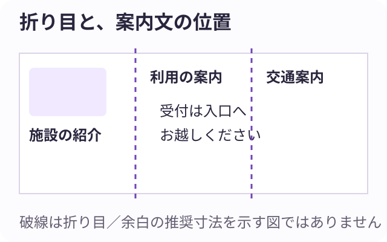

ミライシーン：30体験の原稿一覧
batch-006 ／ 二段階の確認記録あり ／ 90シーン・270選択肢
JSONから作成した閲覧用資料です。利用者向けの公開ページではありません。各案に正解・不正解を付けず、期待できることと残る課題を比較します。資料確認・自己レビューと、実務経験者の確認・公開承認は別です。
出典と確認記録 ／ 職種と内容の二段階チェック ／ 回答ごとの確認理由
動物 ／ 動物園飼育員 ／ animal-keeper-observation-log
「よく動いた」を、伝わる記録へ。
動物の様子を、次の飼育員が比較できる言葉にする。
SCENE 1 / 3 · scene-1
同じ言葉、違う様子。
動物園の飼育日誌に「よく動いた」とあります。前日の記録も同じ言葉ですが、観察した時間が違います。あなたは飼育員として通常の健康確認を行ったうえで、行動の記録方法をチームと整えます。
比較できる記録に向け、何をそろえる？
A．観察した時刻と長さを添える
いつからいつまで見た記録かを残します。
期待できること：活動が見えた条件を比較しやすくなります。
懸念点・確認すること：時間だけでは動作が分かりません。具体的な行動も記します。
B．見た動作を具体的に書く
歩いた、登ったなど、見えた動きを記します。
期待できること：印象の違いによる読み違いを減らせます。
懸念点・確認すること：動作の意味を断定せず、周囲の状況も添えます。
C．よく使う言葉をチームで確認する
同じ動作をどう記すか、例を持ち寄ります。
期待できること：人による記録のばらつきを話し合えます。
懸念点・確認すること：分類に入らない動作を落とさないよう自由記述も残します。
仕事の視点：観察の条件と実際の動作を分けて残します。
仕事とのつながり：日常の行動観察と飼育日誌作成に対応。健康判断は既定の確認を優先。
感想ボタン：印象を観察の言葉にする「同じ『動いた』でも中身が違うんだ。見たことをそのまま伝えたい。」記録の言葉に興味が向いたようです。
SCENE 2 / 3 · scene-2
見ていない時間がある。
新しい日誌の試用中です。作業で離れた15分間は観察していません。その後は休む姿を見ました。記録を読む別の飼育員に、確認できた範囲が分かる形で渡します。
観察していない時間を、どう表す？
A．観察した区間を分ける
離れる前と戻った後を別の時間帯で記録します。
期待できること：連続して見た記録と区別できます。
懸念点・確認すること：区間の間の出来事は分かりません。必要なら他の記録を確認します。
B．未観察の時間を明記する
記録欄へ未観察と書き、理由も短く添えます。
期待できること：空欄を行動なしと誤読するのを防ぐ助けになります。
懸念点・確認すること：理由を詳しく書きすぎず、引き継ぎに必要な情報へ絞ります。
C．時間軸で観察範囲を示す
記録表に見ていた範囲と空白を示します。
期待できること：一日のどこに記録があるか見渡せます。
懸念点・確認すること：図だけでは動作が伝わらないため、本文も添えます。
仕事の視点：観察できた事実と未確認の範囲を区別します。
仕事とのつながり：飼育記録の情報共有。観察の代替や動物の診断は行わない。
感想ボタン：分からない時間も残す「見ていない間のことまで決めつけたくない。空白にも意味があるんだ。」記録の誠実さが気になったのかもしれません。
SCENE 3 / 3 · scene-3
次の飼育員が読み取れる？
一週間分の日誌をチームで読み合わせます。行動の回数、時刻、未観察の欄がそろいました。あなたは書式を採用する前に、比較や引き継ぎに使えるか確かめます。
読み合わせで何を試す？
A．一つの動作を日付で追う
同じ動作の記載箇所を別の飼育員に探してもらいます。
期待できること：必要な記録が見つかるか確認できます。
懸念点・確認すること：回数の比較には観察時間の違いも見ます。
B．同じ時間帯の記録を比べる
見た時間と動作を並べて読みます。
期待できること：比較条件の不足に気づきやすくなります。
懸念点・確認すること：同時刻でも環境は違います。周囲の状況も確認します。
C．未確認事項を挙げてもらう
日誌だけでは分からない点を読み手に示してもらいます。
期待できること：追加して残すべき情報を検討できます。
懸念点・確認すること：全てを記録すると負担が増えます。必要性をチームで絞ります。
仕事の視点：記録が次の観察や共有に役立つかを確かめます。
仕事とのつながり：飼育員間の日誌共有の範囲。異常時は施設の連絡手順に従う。
感想ボタン：記録を使う人まで考える「きれいに書くだけでなく、次の人が迷わず読めるかまで見たい。」記録をつなぐ仕事に関心が向いたようです。
学びとのつながり：動物の生態や行動観察を学ぶことが、個体ごとの様子を記録し共有する仕事につながります。
厚生労働省 job tag「動物園飼育員」（本文確認：2026-11-10）
原稿一覧へ戻る
動物 ／ 動物園飼育員 ／ animal-keeper-visitor-talk
動物を見ながら、何を伝える？
来園者への短い解説を、動物の暮らしにつなげる。
SCENE 1 / 3 · scene-1
寝ているだけ、と言われた。
展示前で来園者が「寝ているだけだね」と話しています。飼育員として休息も暮らしの一部と伝える短い解説を準備します。解説中も動物を起こしたり動かしたりせず、観覧ルールを守ります。
解説の入口を、どこに置く？
A．一日の過ごし方を紹介する
種の活動時間と休息について資料を基に話します。
期待できること：今の姿を暮らしの一部として見やすくなります。
懸念点・確認すること：この個体が休む理由まで断定しないようにします。
B．見える体の特徴へ注目を促す
耳や足など、今見える特徴を案内します。
期待できること：動かなくても観察する入口になります。
懸念点・確認すること：見えない部分を無理に探させず、観覧位置を守ります。
C．野生での暮らしを一つ紹介する
確認した生態から、休息場所などを短く話します。
期待できること：展示の姿から自然環境へ関心を広げられます。
懸念点・確認すること：飼育環境と野生を同じものとして説明しません。
仕事の視点：見える姿を入口に、生態への関心を支えます。
仕事とのつながり：来園者への解説業務。個体の感情を断定しない。
感想ボタン：静かな姿にも意味を見つける「動いていない時間にも、その動物らしさがあるんだ。」目立たない姿にも興味が向いたのかもしれません。
SCENE 2 / 3 · scene-2
三分では話しきれない。
解説は三分です。生態、飼育の工夫、保全について資料があります。飼育チームが内容の正確さを確認し、今回は一つのテーマで来園者が観察できる話にまとめます。
中心にする話をどう絞る？
A．目の前の行動を中心にする
今観察できる行動と関連する知識をまとめます。
期待できること：話と実物を結びつけやすくなります。
懸念点・確認すること：予定した行動をしない時の別の説明も用意します。
B．飼育環境の工夫を中心にする
見える設備の役割を一つ紹介します。
期待できること：展示を暮らしの環境として見られます。
懸念点・確認すること：設備の効果を一概に決めず、観察しながら調整することも伝えます。
C．来園者の疑問を中心にする
よく出る質問を一つ選び、観察できる答えへつなげます。
期待できること：知りたいことから話を聞いてもらいやすくなります。
懸念点・確認すること：質問にない大切な情報を省きすぎないよう確認します。
仕事の視点：時間内に観察と知識がつながる構成を選びます。
仕事とのつながり：飼育員による生態解説の構成。保全活動の成果は創作しない。
感想ボタン：伝えることを選び取る「全部知っていても全部話さなくてよいんだ。目の前で一つ発見してもらいたい。」伝える焦点が気になったようです。
SCENE 3 / 3 · scene-3
伝えたつもりで終わらない。
解説後、来園者の何人かが展示を見直していました。あなたは次回の話し方を考えるため、質問内容と観覧中の反応を記録します。個人を特定する情報は集めません。
解説を振り返る材料にするなら？
A．出た質問をテーマ別にまとめる
生態や飼育など、疑問の種類を整理します。
期待できること：次に補う説明を検討できます。
懸念点・確認すること：質問する人だけの傾向であることを残します。
B．どこを見ていたか記録する
解説中に示した場所へ視線や観察が向いたか見ます。
期待できること：案内した観察点が使われた手がかりになります。
懸念点・確認すること：視線だけで理解したとは判断しません。
C．印象に残った話を任意で聞く
答えたい人に一つ挙げてもらいます。
期待できること：中心にした話が残ったか探れます。
懸念点・確認すること：正答を求めるクイズにせず自由に答えてもらいます。
仕事の視点：行動と質問から、解説を検討する材料を集めます。
仕事とのつながり：来園者サービスの振り返り。効果測定結果ではない。
感想ボタン：伝わった手がかりを拾う「話した後に見方が少し変わったらうれしい。どこが気になったか聞いてみたい。」解説の先の反応が気になったようです。
学びとのつながり：生態の理解と伝え方の学びは、観察を促す動物園の解説づくりにつながります。
厚生労働省 job tag「動物園飼育員」（本文確認：2026-11-10）
原稿一覧へ戻る
動物 ／ 動物園飼育員 ／ animal-keeper-cleaning-record
掃除の気づきを、次につなぐ。
清掃で見つけたことを、飼育環境の管理に生かす。
SCENE 1 / 3 · scene-1
いつもと違う汚れ方。
動物を安全な別区画へ移したことを施設の手順で確認し、飼育員として清掃しています。一角だけ敷材の汚れ方が違います。設備の異常や健康の懸念は責任者へ共有する決まりで、今回は記録の残し方を考えます。
共有する記録に、何を先に整理する？
A．汚れた位置を図に記す
区画内のどの場所か分かる形で残します。
期待できること：翌日の同じ場所と比べやすくなります。
懸念点・確認すること：位置だけでは状態が分かりません。色や広がりも添えます。
B．前回の清掃記録と照らす
交換した敷材や作業時刻の違いを調べます。
期待できること：作業条件による違いを検討できます。
懸念点・確認すること：記録の差だけで原因は決まりません。現場の状態も共有します。
C．見えた状態を具体的に書く
湿りや広がりを、推測と分けて記します。
期待できること：他の飼育員が何を見たか理解しやすくなります。
懸念点・確認すること：言葉だけで伝わりにくい時は施設の方法で補います。
仕事の視点：清掃の気づきを観察情報として共有します。
仕事とのつながり：動物舎の清掃と日誌記録に対応。隔離確認と必要な連絡は全案共通。
感想ボタン：日々の作業から気づきを拾う「掃除も、ただきれいにするだけではないんだ。」普段の作業と観察がつながるところが気になったようです。
SCENE 2 / 3 · scene-2
作業の抜けを見つけたい。
清掃手順そのものは施設で決まっています。チームで使う確認表に、作業済みか未実施か分かりにくい欄がありました。安全の手順を変えず、清掃と確認の記録を整えます。
確認表をどう読みやすくする？
A．実際の作業順に欄を並べる
決められた手順と表の順番を照合します。
期待できること：行き戻りによる記入漏れを減らす助けになります。
懸念点・確認すること：順番だけで実施を保証しません。現場でも確かめます。
B．未実施と確認待ちを区別する
空欄だけにせず、状態を書ける形を提案します。
期待できること：残っている作業が読み取りやすくなります。
懸念点・確認すること：状態を増やしすぎると迷います。用語をそろえます。
C．確認する人の欄を設ける
施設の役割分担に沿って確認者を記す案です。
期待できること：誰に確認すればよいか追いやすくなります。
懸念点・確認すること：名前があるだけで内容を確認したとは限りません。運用も合わせます。
仕事の視点：決められた手順を追える記録にします。
仕事とのつながり：清掃業務の共有。施設の安全手順の変更は扱わない。
感想ボタン：作業と確認をそろえる「やったつもりのまま次の人へ渡したくない。」見落としを減らす記録の工夫に興味が向いたのかもしれません。
SCENE 3 / 3 · scene-3
記録を増やしすぎないために。
新しい清掃記録を一週間試しました。必要な情報は増えましたが、同じことを二か所へ書いています。チームで、飼育日誌との役割分担を確かめます。
重複を整理するなら、どこから見る？
A．二つの表の項目を並べる
同じ内容と片方だけの内容を整理します。
期待できること：残す情報を見落とさず検討できます。
懸念点・確認すること：似た欄でも目的が違う場合があります。読み手に確認します。
B．引き継ぎで使う欄を確認する
次の飼育員がどこを参照するかを聞きます。
期待できること：情報の置き場所を相談しやすくなります。
懸念点・確認すること：日々は使わなくても必要な記録があるため規定も見ます。
C．一度記して参照できる方法を試す
同じ内容を転記せず、記録番号などで参照する案です。
期待できること：食い違う転記を減らせる可能性があります。
懸念点・確認すること：参照先を開く手間や見落としが増えないか確かめます。
仕事の視点：情報の役割と作業負担を一緒に検討します。
仕事とのつながり：飼育日誌と清掃記録の運用検討に限定。
感想ボタン：続けられる記録を考える「丁寧な記録は大事だけれど、書くことばかりにもしたくない。」観察に使う時間まで考えたくなったのかもしれません。
学びとのつながり：飼育環境や衛生管理の学びは、日々の清掃と観察をつなぐことに役立ちます。
厚生労働省 job tag「動物園飼育員」（本文確認：2026-11-10）
原稿一覧へ戻る
農・自然 ／ 農業生産者 ／ farmer-harvest-sorting
同じ野菜、どこで分ける？
出荷先の条件と収穫した野菜を照らして選別する。
SCENE 1 / 3 · scene-1
箱ごとに大きさが違う。
ハウスで育てたキュウリを出荷します。出荷先から大きさの区分表と品質条件が届いています。食べられるかの判断を独断でせず、農場の手順に従い、区分に迷うものは分けて確認します。
選別の準備を、どこから整える？
A．区分表と現物を一緒に確認する
境目に近い野菜を基準と比べます。
期待できること：迷う点を作業前に共有できます。
懸念点・確認すること：見本だけに頼らず、測る条件も確認します。
B．箱に区分名を表示する
どの区分を入れる箱か分かるようにします。
期待できること：分類後の入れ違いを減らす助けになります。
懸念点・確認すること：表示が正しくても選別の判断は別に確認します。
C．迷った品の確認場所を決める
保留品を通常品と分け、確認者へ渡す流れを決めます。
期待できること：曖昧な判断のまま出荷することを避けやすくなります。
懸念点・確認すること：保留をためたままにせず確認の時刻も決めます。
仕事の視点：品質条件を作業で使える形にします。
仕事とのつながり：収穫・選別・出荷の業務に対応。品質基準は教材の架空条件。
感想ボタン：基準と実物を照らす「育てた後にも、そろえて届ける工夫があるんだ。」野菜を送り出す仕事が気になったのかもしれません。
SCENE 2 / 3 · scene-2
数が合わない。
選別後の箱の数と記録が一致しません。出荷前に確認できる時間があり、未確認の箱は出さない方針です。収穫数、選別数、箱詰め数の記録をたどります。
食い違いをどこから確かめる？
A．本数と箱数の単位を見る
記録ごとに何を数えた数字か確認します。
期待できること：単位の混在による差を探せます。
懸念点・確認すること：単位が同じでも数え違いは残るため現物も確認します。
B．保留品の記録を照合する
選別で分けた品がどの数に含まれるか追います。
期待できること：作業途中の品による食い違いを探れます。
懸念点・確認すること：保留品だけが原因とは限りません。箱詰め記録も見ます。
C．箱ごとの中身を再確認する
対象を区切って現物を数え、記録と比べます。
期待できること：どの箱で一致しないかを絞れます。
懸念点・確認すること：再確認の間に物が動かないよう作業を調整します。
仕事の視点：単位と作業段階をそろえて照合します。
仕事とのつながり：出荷管理の架空場面。未確認品の出荷は選択肢にしない。
感想ボタン：数字と現物をつなぐ「数えるだけでも、何を数えたかが大事なんだ。」記録と箱のつながりが気になったようです。
SCENE 3 / 3 · scene-3
次の収穫にも使える記録。
出荷前の照合が終わりました。あなたは次回の選別計画のために、区分別の数量と作業時間をまとめます。今回の一日だけで畑全体の傾向を決めないようにします。
次回の準備へ何を残す？
A．区分ごとの数量を残す
同じ単位で各区分の数を整理します。
期待できること：箱の必要数を考える材料になります。
懸念点・確認すること：次回も同じ割合とは限らず、収穫見込みを確認します。
B．迷いやすい条件を残す
保留した理由と確認結果を記します。
期待できること：次回の作業前説明に生かせます。
懸念点・確認すること：出荷先の条件が変われば見直しが必要です。
C．作業時間と人数を残す
選別と箱詰めを分けて記録します。
期待できること：人手の準備を考えやすくなります。
懸念点・確認すること：慣れや品の状態でも時間は変わるため条件を添えます。
仕事の視点：出荷実績を条件付きで次の計画へつなぎます。
仕事とのつながり：生産量や出荷の計画に対応する記録。
感想ボタン：収穫の結果を次へ生かす「今日はどんな野菜が多かったんだろう。次の準備にもつなげたい。」育てる仕事の繰り返しが気になったのかもしれません。
学びとのつながり：農業の生産・流通を学ぶことが、育てた作物を出荷条件に合わせて届ける仕事につながります。
厚生労働省 job tag「ハウス野菜栽培者」（本文確認：2026-11-10）
原稿一覧へ戻る
農・自然 ／ 農業生産者 ／ farmer-shipping-forecast
来週、どれくらい届けられる？
育つ様子と注文を照らし、出荷見込みを伝える。
SCENE 1 / 3 · scene-1
注文の数に届くかな。
ハウス野菜の農場で、来週の注文数量を確認しています。収穫できそうな株にはばらつきがあり、今日の見回りと過去の収穫記録が使えます。確定していない数量を約束せず、見込みを整理します。
出荷見込みの材料を、どこから見る？
A．収穫が近い株を区画別に確認する
同じ基準で育ち具合を見ます。
期待できること：近い時期に収穫できる範囲を整理できます。
懸念点・確認すること：見た後も生育は変わるため、再確認日を決めます。
B．似た時期の収穫記録を見る
品種や栽培条件が近い記録を比べます。
期待できること：見込みを考える参考になります。
懸念点・確認すること：天候や株の状態は同一ではなく、今年の観察を優先します。
C．納品予定日と収穫予定を並べる
収穫後の選別・箱詰め・輸送に必要な時間も含め、届ける日に間に合うかを整理します。
期待できること：数量だけでなく時期のずれを見つけられます。
懸念点・確認すること：収穫予定自体が未確定なので幅を添えます。
仕事の視点：生育の観察を出荷の見込みへ結びます。
仕事とのつながり：出荷時期と生産量の計画に対応。架空の注文設定。
感想ボタン：育つ様子を見通しにする「注文の数字だけでは予定が決まらないんだ。育ち方も見ながら考えたい。」自然と計画の間が気になったようです。
SCENE 2 / 3 · scene-2
見込みが少なくなった。
再確認で、来週の出荷見込みが注文数を下回りそうです。農場の責任者と取引先へ早めに相談します。品質基準を下げず、数量や日程の調整が可能かを確認する場面です。
相談に向けて何を整理する？
A．届けられる数量の幅を示す
確認済みと追加で見込む分を分けます。
期待できること：相手が必要な対応を検討しやすくなります。
懸念点・確認すること：見込みが変わる時点も一緒に伝えます。
B．日程ごとの見込みを示す
別の日に収穫できそうな範囲を整理します。
期待できること：日程調整を相談する材料になります。
懸念点・確認すること：相手が待てるとは限らず、希望を確認します。
C．再確認する日を共有する
いつ次の数量情報を出せるか決めます。
期待できること：未確定のまま待たせる状態を減らせます。
懸念点・確認すること：日付だけで数量は確保できません。現時点の見込みも示します。
仕事の視点：品質を守り、調整可能な条件を明らかにします。
仕事とのつながり：出荷・販売の調整を農場責任者と行う設定。
感想ボタン：難しい見込みも伝える「足りないかもしれないことも、早く伝えた方が考えられることがある。」相手と計画をつなぐ部分が気になったのかもしれません。
SCENE 3 / 3 · scene-3
予想と実際を並べる。
来週分の出荷を終え、当初の見込みと実績に差がありました。品種、区画、観察日、実際の収穫日が記録されています。次の見込みを立てるために振り返ります。
差の理由を考える入口は？
A．区画ごとの差を比べる
同じ区画の見込みと実績を並べます。
期待できること：ずれが大きかった場所を探せます。
懸念点・確認すること：場所が原因とは限りません。株の状態なども見ます。
B．観察日から収穫日までを見る
予想に使った観察がいつのものか確認します。
期待できること：見込みを見直す間隔を検討できます。
懸念点・確認すること：間隔を短くするだけで精度が上がるとは限りません。
C．見込みに含めた株の条件を見る
収穫できると判断した特徴を照合します。
期待できること：判断基準の曖昧な点を話し合えます。
懸念点・確認すること：結果を見て都合よく基準を決めず、次の観察で試します。
仕事の視点：見込みと実績の差を、観察条件へ戻して検討します。
仕事とのつながり：生育観察と生産計画の反復に対応。
感想ボタン：予想のずれから学ぶ「思った通りには育たないから、記録を比べる意味があるんだ。」見通しを育てる仕事が気になったようです。
学びとのつながり：栽培管理と農業経営を学ぶと、生育を観察しながら出荷計画を調整する視点につながります。
厚生労働省 job tag「ハウス野菜栽培者」（本文確認：2026-11-10）
原稿一覧へ戻る
農・自然 ／ 農業生産者 ／ farmer-tool-workflow
作業の前に、道具がそろう。
農作業の道具と準備を、次の作業までつなぐ。
SCENE 1 / 3 · scene-1
探す時間が長い。
ハウスの管理作業前に、手道具を探す時間がかかっています。使用点検や衛生管理は農場の手順どおり行い、故障したものは使いません。作業者と道具置場を見直す相談をします。
置場の検討前に何を調べる？
A．よく一緒に使う道具を並べる
作業別に必要な組合せを確認します。
期待できること：まとめて準備する単位を考えられます。
懸念点・確認すること：共用する道具もあるため、重複して囲い込まないようにします。
B．探した場所と戻した場所を聞く
実際の置き方の違いを整理します。
期待できること：定位置が伝わっていない箇所を探せます。
懸念点・確認すること：人を責めず、表示や置場の分かりやすさを検討します。
C．同時に必要な数を確かめる
作業が重なる時間と必要数を照らします。
期待できること：置場以外の不足を見つけられます。
懸念点・確認すること：買い足す前に作業の組み方も相談します。
仕事の視点：道具の使われ方から準備を考えます。
仕事とのつながり：農場の作業準備と片付けを題材化。機械操作の指示は扱わない。
感想ボタン：準備の動きを見る「畑に出る前の探し物も減らせるんだ。」作業の始め方に関心が向いたのかもしれません。
SCENE 2 / 3 · scene-2
戻す場所が分かるように。
農場で保管条件を確認し、候補の棚を使って試すことになりました。洗浄や点検後の道具と、まだ使えない道具を混ぜない方針です。表示や管理方法を作業者と相談します。
試す仕組みはどれ？
A．棚に道具名と必要数を示す
戻す場所とそろう数を表示します。
期待できること：不足を見つける手がかりになります。
懸念点・確認すること：表示だけで点検済みかは分からず、状態表示も保ちます。
B．作業別の準備表を置く
開始前に必要な道具を確認できる表を用意します。
期待できること：作業に出てからの取り戻りを減らせます。
懸念点・確認すること：作業内容が変わった時には表の見直しが必要です。
C．貸出と返却を簡単に記録する
誰の作業で使用中か分かる記録を試します。
期待できること：置場にない理由を追いやすくなります。
懸念点・確認すること：記入の負担が大きくならない方法に絞ります。
仕事の視点：保管位置と使用状態を一緒に共有します。
仕事とのつながり：農作業の道具管理という架空の運用案。
感想ボタン：次に使う人へ渡す「自分が使い終わった時が、次の人の準備になるんだ。」片付けの先まで考えたくなったようです。
SCENE 3 / 3 · scene-3
探す時間は減ったけれど。
作業者との相談で、道具の置場表示と貸出・返却の記録を組み合わせて試しました。探す時間は減りましたが、終業時の記入に時間がかかっています。安全・衛生の確認を維持し、準備と片付け全体の使いやすさを振り返ります。
続ける方法を考える材料は？
A．準備と片付けの時間を合わせる
開始前と終了後を同じ範囲で記録します。
期待できること：負担が移っただけかを検討できます。
懸念点・確認すること：時間以外に取り違えや確認漏れも見ます。
B．使わない記録欄を確認する
誰も参照しない欄がないか確認します。
期待できること：必要な記録へ絞る相談ができます。
懸念点・確認すること：保存が必要な記録もあるため、独断で削除しません。
C．交代する人に使ってもらう
普段と違う作業者でも準備できるか試します。
期待できること：慣れがなくても分かる表示か確かめられます。
懸念点・確認すること：初回の不慣れと仕組みの問題を分けて聞きます。
仕事の視点：一部分の時間短縮だけで運用を評価しません。
仕事とのつながり：日々の作業準備の運用検討。生産量への効果は保証しない。
感想ボタン：作業全体で使いやすくする「一か所が楽になっても、別の人が大変なら考え直したい。」全体の仕事を見る視点が気になったようです。
学びとのつながり：栽培実習と農場運営の学びは、日々の準備・片付け・記録を整えることにもつながります。
厚生労働省 job tag「ハウス野菜栽培者」（本文確認：2026-11-10）
原稿一覧へ戻る
流通・物流 ／ 物流プランナー ／ logistics-receiving-units
届いた数と、伝票の数が違う？
入荷時の数え方と記録をそろえる物流の仕事。
SCENE 1 / 3 · scene-1
十個のはずが二箱。
倉庫で入荷業務の改善を担当する物流プランナーです。伝票には10個、現物は2箱とあり、1箱5個入りかは未確認です。現場の受入手順に沿い、照合が終わるまで在庫を確定しません。
数量の確認を、どこから進める？
A．箱の表示と品番を照らす
包装の単位と入数が書類と一致するか見ます。
期待できること：箱数から中身の数へ換算する根拠を探せます。
懸念点・確認すること：表示だけで実数は保証されず、手順に沿った現物確認も行います。
B．発注した単位を確認する
発注控えが個数か箱数かを調べます。
期待できること：伝票側との単位の食い違いを探れます。
懸念点・確認すること：発注が正しくても納品内容は別に照合します。
C．納入元へ包装単位を確認する
品番を示して、今回の入数を尋ねます。
期待できること：表示が曖昧な時の確認材料になります。
懸念点・確認すること：回答だけで検品を省かず、現物と合わせます。
仕事の視点：入荷の現物と書類を同じ単位で照合します。
仕事とのつながり：出荷・受荷事務の数量照合を参考に、現場改善を担う役割として設定。
感想ボタン：数える単位をそろえる「二箱と十個は、同じ量かもしれない。数字だけで判断できないんだ。」物と情報の照合が気になったようです。
SCENE 2 / 3 · scene-2
同じ迷いを繰り返さない。
入荷数は一致し、受入を完了しました。同じ商品で箱数と個数を取り違える場面が他にもありました。あなたは現場と事務担当に、入力や照合の方法を提案します。
最初に試す工夫は？
A．個数と箱数の欄を分ける
欄名と単位を明記した入力表を試します。
期待できること：数字が何を示すか見分けやすくなります。
懸念点・確認すること：二重記入の食い違いが増えないかも確認します。
B．品番ごとの入数情報を照合する
参照する入数が現行の納入条件と合うか見ます。
期待できること：換算の根拠を共有しやすくなります。
懸念点・確認すること：包装が変わる時の確認方法も決めます。
C．確定前に単位を読み合わせる
検品結果と登録内容を単位まで照合します。
期待できること：確定直前の取り違えを探せます。
懸念点・確認すること：確認作業だけ増えないよう対象を絞って試します。
仕事の視点：作業者の注意だけに依存しない照合方法を検討します。
仕事とのつながり：入荷・在庫情報管理の運用改善として位置付ける。
感想ボタン：間違いやすさを仕組みで減らす「気をつけて、だけで終わらせたくない。単位が見える形なら迷いを減らせそう。」作業を支える仕組みが気になったようです。
SCENE 3 / 3 · scene-3
在庫にも正しく届いた？
入荷方法の試行後、受入記録と在庫画面を照合します。商品はまだ出庫しておらず、動いた数量を追える状態です。あなたは現物だけでなく情報の反映も確認します。
確認する入口は？
A．入荷分の増加数を比べる
登録前後の在庫差と受入数を照合します。
期待できること：数量が反映されたかを確認できます。
懸念点・確認すること：同時の他の入荷もあれば区別します。
B．品番と保管先を追う
記録と画面の品番・場所を照らします。
期待できること：数は合っても別商品へ入る誤りを探せます。
懸念点・確認すること：場所の記録と実際の棚も照合します。
C．未確定の受入が残っていないか見る
処理状態を調べ、完了扱いとの差を確認します。
期待できること：登録漏れの候補を見つけられます。
懸念点・確認すること：未確定には正当な保留もあり、理由を確かめます。
仕事の視点：受入完了と在庫への反映を別々に確認します。
仕事とのつながり：在庫受払の情報管理に対応。架空の試行記録。
感想ボタン：情報が届くまで見届ける「倉庫にあるだけでなく、画面にも正しく載ることが必要なんだ。」物の流れの裏側が気になったのかもしれません。
学びとのつながり：物流や在庫管理を学ぶと、品物と情報を一致させる仕組みづくりにつながります。
厚生労働省 job tag「出荷・受荷事務」（本文確認：2026-11-10）
原稿一覧へ戻る
流通・物流 ／ 物流プランナー ／ logistics-returns-routing
戻ってきた商品を、迷子にしない。
返品の状態と情報をそろえ、次の処理へ引き継ぐ。
SCENE 1 / 3 · scene-1
返品の箱が届いた。
倉庫に返品が届きました。あなたは物流プランナーとして、確認前の商品が通常在庫に混ざらない受入の流れを現場と検討します。再販売の判断は権限を持つ担当が行い、ここでは記録と置場を扱います。
受け入れの整理をどこから始める？
A．返品と注文を照合する
品番や注文番号を記録と照らします。
期待できること：どの取引の戻りかを追いやすくなります。
懸念点・確認すること：番号が不明なものは推測で結びつけず確認待ちにします。
B．確認待ちの置場を決める
通常品と混ざらない場所を現場と確認します。
期待できること：誤って出荷へ回すことを避けやすくなります。
懸念点・確認すること：置場だけでは理由が分からず、管理番号も必要です。
C．受け取った状態を記録する
外装や数量など、確認できた事実を残します。
期待できること：次の担当が確認する材料になります。
懸念点・確認すること：状態の記録と再販売可否の判断を混同しません。
仕事の視点：返品を通常在庫と区別して追跡します。
仕事とのつながり：返品伝票と在庫管理の業務を参考にした改善検討。
感想ボタン：戻る流れにも目を向ける「届けた後に戻ってくる物にも、次の行き先が必要なんだ。」逆向きの物流が気になったようです。
SCENE 2 / 3 · scene-2
確認中のものが見つからない。
返品ごとの管理番号はありますが、確認作業へ渡した後の所在が分かりにくくなっています。現場では置場の変更があり、情報の更新が後回しになっているようです。
引き継ぎの見直しを、どこから考える？
A．実際の移動の順をたどる
受入から確認までの置場を確認します。
期待できること：記録が途切れる場面を探せます。
懸念点・確認すること：想定の手順だけでなく実際の例で確かめます。
B．状態名を整理する
確認待ち、確認中、判断待ちなどを定義します。
期待できること：作業の進み具合を共有しやすくなります。
懸念点・確認すること：細かすぎる状態は使いづらいため現場と絞ります。
C．移動時に記録できる方法を試す
管理番号と移動先をその場で残す案です。
期待できること：後回しの記録を減らせる可能性があります。
懸念点・確認すること：操作が作業を妨げないか小さく試します。
仕事の視点：品物の移動と情報の更新を結びます。
仕事とのつながり：保管場所・管理台帳の整合という範囲。
感想ボタン：途中の状態を見えるようにする「受付だけでなく、途中でもどこにあるか分かるようにしたい。」受け渡しの切れ目が気になったようです。
SCENE 3 / 3 · scene-3
滞留している理由は？
返品の一覧に、長く確認待ちのままの品がありました。必要な書類待ちもあれば、所在確認が必要なものもあります。担当部署と解消方法を考えるために整理します。
相談資料をどう作る？
A．待っている理由で分ける
書類、状態確認、承認などを整理します。
期待できること：相談先を絞る材料になります。
懸念点・確認すること：理由が不明なものは別に残し、決めつけません。
B．次に動く担当と情報を並べる
誰に何が届けば進むかを確認します。
期待できること：依頼内容を具体的にできます。
懸念点・確認すること：相手の権限や予定を確認して調整します。
C．期間と数量を併せて示す
長い品と件数が多い状態を見渡します。
期待できること：対応の優先順位を相談しやすくなります。
懸念点・確認すること：件数だけで重要度を決めず、商品の条件も確認します。
仕事の視点：経過日数と未解決の条件をセットで示します。
仕事とのつながり：返品を含む在庫管理の調整業務。
感想ボタン：待っている理由をほどく「止まっている理由が分かれば、次の人へつなげられそう。」品物だけでなく情報も運ぶ視点が気になったようです。
学びとのつながり：物流管理や業務設計を学ぶと、通常の出荷だけでなく返品の流れも整理できます。
厚生労働省 job tag「出荷・受荷事務」（本文確認：2026-11-10）
原稿一覧へ戻る
流通・物流 ／ 物流プランナー ／ logistics-inventory-count
棚と画面、数をそろえる。
棚卸しで見つかった差を、物の動きから確かめる。
SCENE 1 / 3 · scene-1
棚には八個、画面には十個。
倉庫の棚卸しで、ある商品が現物8個、システム10個でした。あなたは物流プランナーとして、現場と記録の照合を進めます。差を合わせるためだけの数値変更はせず、決めた手順で確認します。
差を調べる入口は？
A．数える範囲と単位を確認する
箱や別置き分を含めるか、手順と比べます。
期待できること：数え方による差を探せます。
懸念点・確認すること：範囲が同じでも移動中の数量がないか確認します。
B．直前の入出庫を追う
登録時刻と実際に動かした時刻を照らします。
期待できること：反映待ちによる差を検討できます。
懸念点・確認すること：記録があるだけで現物が動いたとは限らず照合します。
C．別の保管場所を確認する
管理上の場所と仮置きの状況を確認します。
期待できること：場所違いの可能性を探れます。
懸念点・確認すること：他の商品を混同しないよう品番も照合します。
仕事の視点：在庫差を手がかりに現物と記録を照合します。
仕事とのつながり：在庫受払と保管管理を参考にする。
感想ボタン：差の理由をたどる「画面の数字を直す前に、どうして違うか知りたい。」物の動きを追う仕事が気になったようです。
SCENE 2 / 3 · scene-2
数えている間にも動く。
棚卸しの対象を数える間に出庫が入りました。業務を全て止めることはできません。責任者の方針に沿い、対象区画の移動と計数時刻を追える方法を現場と相談します。
照合条件をそろえる案は？
A．小区画ごとに確認時間を設ける
短時間だけ対象の移動を調整できるか相談します。
期待できること：数える範囲と時点をそろえやすくなります。
懸念点・確認すること：出荷への影響を事前に確認します。
B．計数中の移動を別に記録する
数えた後に動いた数量と時刻を残します。
期待できること：同じ時点の数へ照合する材料になります。
懸念点・確認すること：記録漏れがあると合わないため記入方法を確認します。
C．基準時刻を決めて記録を取り出す
その時点の在庫と計数を対応させます。
期待できること：照合対象の時点を共有できます。
懸念点・確認すること：基準以降の移動も追わないと現物と比べられません。
仕事の視点：数量と記録時点を一組として扱います。
仕事とのつながり：棚卸し・在庫管理の運用計画に対応。
感想ボタン：動く在庫を時点で捉える「正しく数えても、その後動けば変わるんだ。」数字に時刻が必要な理由が気になったようです。
SCENE 3 / 3 · scene-3
差が出た工程を確かめる。
照合の結果、仮置きから棚へ移す際の記録漏れが複数見つかりました。今回は担当者個人を評価せず、記録が抜ける工程を改善する案をまとめます。
再発を減らすため、何を試す？
A．仮置きの識別を分かりやすくする
移動待ちが通常の棚と区別できる表示を試します。
期待できること：記録の必要な物を見つけやすくなります。
懸念点・確認すること：表示だけで完了記録は残らず、移動時の手順も確認します。
B．移動の完了時に記録する流れを試す
現物を動かす作業と登録を一つの区切りにします。
期待できること：後でまとめて記入する抜けを減らせます。
懸念点・確認すること：端末の使いにくさがないか現場で試します。
C．終業前に未完了移動を照合する
移動記録と仮置き品の残りを確認します。
期待できること：その日のうちに食い違いを探せます。
懸念点・確認すること：確認する人に負担が集中しない役割分担が必要です。
仕事の視点：見つかった工程の問題を運用案へつなげます。
仕事とのつながり：保管場所と在庫台帳の整合改善を扱う。
感想ボタン：原因を次の仕組みへつなぐ「誰かに注意するだけでなく、抜けにくい流れを考えたい。」仕組みで支える部分が気になったのかもしれません。
学びとのつながり：在庫管理と情報処理の学びは、数量の差を調べ再発を減らす仕事につながります。
厚生労働省 job tag「出荷・受荷事務」（本文確認：2026-11-10）
原稿一覧へ戻る
文化・学び ／ 博物館学芸員 ／ museum-curator-object-history
この道具は、どこから来た？
受け入れた資料の来歴を、記録と聞き取りでたどる。
SCENE 1 / 3 · scene-1
名前が二つある道具。
地域資料を扱う博物館で、受入済みの道具を調査します。古い台帳の名称と提供者の呼び名が違います。触れる際は館の取扱手順を守り、名称をすぐに確定せず関連記録を調べます。
名称を調べる入口は？
A．受入時の記録を読む
誰からいつ受け入れたか、名称の記載をたどります。
期待できること：呼び名が残った経緯を確認できます。
懸念点・確認すること：記録者の推定が混じる可能性もあるため出所を見ます。
B．提供者へ使い方を聞く
同意を得て、使った場所や時期を具体的に尋ねます。
期待できること：名称と暮らしの関係を知る材料になります。
懸念点・確認すること：記憶だけで年代や用途を確定せず他の資料と照らします。
C．関連資料の名称を比べる
同地域や時期の図録・文献を調べます。
期待できること：呼び名の使われ方を比較できます。
懸念点・確認すること：似た図だけで同一の道具とせず特徴も照合します。
仕事の視点：名称を根拠と一緒に調べます。
仕事とのつながり：学芸員の資料整理・調査研究に対応。
感想ボタン：名前から背景をたどる「一つの道具にも違う呼び名があるんだ。使った人の話を知りたい。」ものの背景が気になったようです。
SCENE 2 / 3 · scene-2
確かなことと推定を分ける。
台帳と聞き取りがそろいました。持ち主と受入年は確認できましたが、製作年は不明です。学芸員として、収蔵資料の説明用データを整理します。
未確定の情報をどう残す？
A．事実と証言の欄を分ける
確認済み事項と誰の話かを別に記します。
期待できること：読む人が情報の性質を見分けられます。
懸念点・確認すること：証言が劣ると一律評価せず、対象に応じて検討します。
B．各情報に出所を付ける
台帳番号や聞き取り日などを結びます。
期待できること：調査の根拠へ戻りやすくなります。
懸念点・確認すること：個人情報の公開範囲は館の方針に従います。
C．未確認の問いをまとめる
製作年など次に確かめたい事項を記します。
期待できること：継続調査の課題が引き継げます。
懸念点・確認すること：問いだけで説明を終えず、分かっている事実も整理します。
仕事の視点：情報の確かさをそろえず、根拠ごとに管理します。
仕事とのつながり：資料目録と調査記録の作成に対応。
感想ボタン：分からないことを正確に残す「何でも答えを付けるより、まだ分からないと残す方が大切なこともあるんだ。」調べる仕事の慎重さが気になったようです。
SCENE 3 / 3 · scene-3
短い説明にまとめる。
館内の紹介欄へ道具の説明を載せます。文字数は短く、製作年は依然不明です。用途の記録と提供者の証言は出所を示せます。断定の強さを変えずにまとめます。
説明の中心をどこに置く？
A．確認できた用途を入口にする
記録にある使い方を短く紹介します。
期待できること：道具と暮らしを結びやすくなります。
懸念点・確認すること：全地域で同じ用途だったとは書かないようにします。
B．提供された経緯を入口にする
館へ届くまでの確認済みの来歴を示します。
期待できること：資料が残った背景を伝えられます。
懸念点・確認すること：経緯だけでは道具の役割が分からないため用途も添えます。
C．調査中の問いを入口にする
不明な製作年などを問いとして示します。
期待できること：資料を調べる過程へ関心を向けられます。
懸念点・確認すること：答えが出たような見出しにせず、確認済み事項も伝えます。
仕事の視点：短い紹介でも事実と推定の区別を保ちます。
仕事とのつながり：資料解説の作成に対応。
感想ボタン：根拠を保って伝える「面白く伝えたいけれど、分からない年代まで決めたくない。」伝わりやすさと正確さの両方が気になったようです。
学びとのつながり：歴史や資料調査の学びは、ものの背景を根拠とともに残す学芸員の仕事につながります。
厚生労働省 job tag「学芸員」（本文確認：2026-11-10）
原稿一覧へ戻る
文化・学び ／ 博物館学芸員 ／ museum-curator-handling-program
本物に近づく体験をつくる。
複製品を使う学習会で、観察の入口を考える。
SCENE 1 / 3 · scene-1
触れるものは複製品。
博物館で昔の道具の学習会を企画します。本物は保存上の理由で触れず、取扱確認済みの複製品を使います。画像は木製の洗濯板を模した教材用イメージです。参加者は初めて見る人が中心で、体験は15分です。
最初の観察をどう始める？
A．形の気づきを出してもらう
表面の溝や木枠など、見つけた特徴を挙げてもらいます。
期待できること：専門知識なしでも観察に参加できます。
懸念点・確認すること：気づきが用途の断定にならないよう後で資料と照らします。
B．使う場面を想像してもらう
形を手がかりに、何に使いそうか話してもらいます。
期待できること：暮らしと道具を結ぶ入口になります。
懸念点・確認すること：想像を史実として残さず、解説で区別します。
C．今の道具との共通点を探す
身近な道具で似ている部分を考えてもらいます。
期待できること：初めてのものにも関心を向けやすくなります。
懸念点・確認すること：現代の用途をそのまま昔へ当てはめません。
仕事の視点：資料の特徴を体験につなぎます。
仕事とのつながり：学芸員の講座・解説業務に対応。複製品使用は教材設定。
感想ボタン：触れて気づく入口をつくる「名前を聞く前に、形から考えるのも面白そう。」ものを通して知る体験が気になったようです。
SCENE 2 / 3 · scene-2
話す人だけの体験にしない。
学習会の試行では発言が多い人と、静かに触っている人がいました。全員に発言を強制せず、観察の気づきを持てる参加方法を検討します。紙と筆記具も使えます。
参加の入口を増やすなら？
A．特徴を描く時間を設ける
気になった部分を絵や線で残せるようにします。
期待できること：話す以外の表現で観察を共有できます。
懸念点・確認すること：絵の上手さを評価せず、見つけた点を扱います。
B．二人で短く話せる時間を作る
大人数の前でなく近くの人と気づきを交わせます。
期待できること：発言の負担を下げる選択肢になります。
懸念点・確認すること：話すことを望まない人には観察を続ける道も残します。
C．観察の問いを紙で渡す
形や使い方に関する短い問いを用意します。
期待できること：自分のペースで見る手がかりになります。
懸念点・確認すること：問いだけに注意が偏らないよう自由な気づきも歓迎します。
仕事の視点：発言量だけで学びを評価しません。
仕事とのつながり：教育普及活動の進め方を検討する範囲。
感想ボタン：違う参加の仕方を受け止める「言葉にしなくても、じっくり見ている人がいるかもしれない。」参加の形を広げる工夫が気になったようです。
SCENE 3 / 3 · scene-3
何を持ち帰れた？
学習会後に、希望者が一つだけ気づきを残せるカードを用意します。正誤の採点や個人情報の収集はしません。次の企画へ生かすため、体験の受け止め方を確かめます。
カードで尋ねたいことは？
A．初めて気づいた特徴を聞く
観察で見つけたことを一つ残してもらいます。
期待できること：どの特徴が入口になったか探れます。
懸念点・確認すること：知識の正確さが必要な箇所は解説と照合します。
B．まだ知りたいことを聞く
残った疑問を自由に書いてもらいます。
期待できること：次の解説や調査の手がかりになります。
懸念点・確認すること：すべてにすぐ答えられると約束しません。
C．次に見たい資料を聞く
関連する道具などへの関心を尋ねます。
期待できること：展示や学習会へのつながりを考えられます。
懸念点・確認すること：希望だけで収蔵・保存条件を変えず実現性を検討します。
仕事の視点：参加者の気づきを次の企画の材料にします。
仕事とのつながり：講座の振り返りを題材化。効果の実証ではない。
感想ボタン：学びの続きに目を向ける「全部分かって終わるより、次に知りたいことが残るのもよさそう。」興味が続く体験を考えたくなったのかもしれません。
学びとのつながり：資料研究と教育普及の学びは、ものを観察して考える体験づくりにつながります。
厚生労働省 job tag「学芸員」（本文確認：2026-11-10）
原稿一覧へ戻る
文化・学び ／ 博物館学芸員 ／ museum-curator-digital-record
写真と資料を、つながる形へ。
収蔵品の画像と記録を取り違えずに管理する。
SCENE 1 / 3 · scene-1
似た資料の写真が並んでいる。
博物館で収蔵品の画像整理を行います。似た形の道具が複数あり、写真だけでは区別しにくい状態です。館の管理番号と撮影記録を使い、公開用の情報は別途確認する手順です。
写真と資料の対応を、どこから確認する？
A．撮影記録と管理番号を照合する
どの順に何を撮ったかを記録から追います。
期待できること：画像の対応を確かめる根拠になります。
懸念点・確認すること：記録ミスもあり得るため特徴も見比べます。
B．画像に写る識別情報を見る
館の撮影方法に沿って、番号などの写り込みを確認します。
期待できること：似た形の資料を区別する材料になります。
懸念点・確認すること：読めない番号を推測で補いません。
C．現物の特徴との対応を確認する
取扱手順を守り、傷や形の特徴を照合します。
期待できること：記録との不一致を見つける助けになります。
懸念点・確認すること：特徴だけで確定せず管理記録も合わせます。
仕事の視点：画像と資料の同一性を根拠で確認します。
仕事とのつながり：学芸員の資料整理・目録作成に対応するデジタル管理場面。
感想ボタン：資料と情報を結び付ける「写真があっても、何の写真か分からなければ困るんだ。」記録を支える裏側が気になったようです。
SCENE 2 / 3 · scene-2
公開できる欄はどれ？
資料と画像の対応を確認できました。内部の記録には提供者の連絡先や未確定の推定も含まれます。公開は館の方針と許諾を確認したうえで行い、あなたはそのための情報整理を担当します。
確認用の一覧をどう整える？
A．内部用と公開候補の欄を分ける
項目ごとの用途が分かる表にします。
期待できること：不要な内部情報の混入を探しやすくなります。
懸念点・確認すること：候補に分けただけで公開可とはせず確認を受けます。
B．各画像の確認状況を一覧にする
許諾や対応確認の状態を記録します。
期待できること：未確認のまま進むものを見つけやすくなります。
懸念点・確認すること：確認の範囲や条件も残し単純な丸印だけにしません。
C．説明文と根拠を並べる
名称や年代の説明に出所を添えて点検します。
期待できること：推定を断定へ変えてしまう箇所を探せます。
懸念点・確認すること：根拠があっても公開条件の確認は別に必要です。
仕事の視点：内部記録と公開用情報を分けて確認します。
仕事とのつながり：資料の情報提供を題材にし、権利の法的判断は館の確認手順へ委ねる。
感想ボタン：届ける情報の範囲を考える「分かることを全部載せるのではなく、確かめて渡すんだ。」情報を扱う責任が気になったのかもしれません。
SCENE 3 / 3 · scene-3
後から同じ資料を探せる？
館内向けの画像台帳を試用します。管理番号、資料名、画像の参照先が入りました。別の学芸員が調査で使えるか、実際の探し方で点検します。
台帳の使いやすさをどう確かめる？
A．別名から資料を探してもらう
記録されている呼び名の違いで検索を試します。
期待できること：名称が一つでない資料の探し方を検討できます。
懸念点・確認すること：別名を増やす時も根拠と正式な管理名を保ちます。
B．画像の参照先を開いて確認する
台帳から正しい画像が開くか照合します。
期待できること：移動先違いやリンク切れを探せます。
懸念点・確認すること：一回の確認だけで永続性は保証せず管理方法も共有します。
C．撮影日や向きの情報を確認する
同じ資料の画像どうしを比較できるか見ます。
期待できること：調査時に必要な画像を選びやすくなります。
懸念点・確認すること：情報がない画像を推測で埋めず未確認とします。
仕事の視点：別の人が根拠へ戻れる記録にします。
仕事とのつながり：目録と資料情報の提供に対応。
感想ボタン：次の調査へ情報を残す「自分には分かるファイル名でも、別の人は迷うかもしれない。」資料を未来へつなぐ感覚が気になったようです。
学びとのつながり：資料整理や情報管理を学ぶと、収蔵品と画像・解説を結び付ける仕事につながります。
厚生労働省 job tag「学芸員」（本文確認：2026-11-10）
原稿一覧へ戻る
建築 ／ 建築士 ／ architect-shop-delivery-route
お店の裏側にも、動きがある。
お客さんと商品が通る場所を、店舗の計画に結ぶ。
SCENE 1 / 3 · scene-1
商品は、いつどこから届く？
小さな雑貨店の改修を相談された建築士です。店主は売り場を広くしたいと希望しています。商品は週に数回届きますが、受け取り方や保管場所はまだ聞いていません。図面を描く前に使い方を確認します。
店舗の条件を整理するため、何を聞く？
A．商品が届く時間と量を聞く
営業中の受け取りや、一度に届く箱の量を確かめます。
期待できること：一時的な置場と来店者との重なりを考えられます。
懸念点・確認すること：平均だけでは多い日の条件を見落とすため幅も聞きます。
B．入口から棚までの動きを聞く
受け取り、検品、保管、品出しの場所をたどります。
期待できること：行き来が集中する場所を探せます。
懸念点・確認すること：聞いた手順と実際の動きが同じか現場でも確認します。
C．箱を開ける道具と場所を聞く
作業台や台車など、使うものも確かめます。
期待できること：通り道以外に必要な作業の広さを考えられます。
懸念点・確認すること：道具の大きさだけで決めず、扱う人の動きも見ます。
仕事の視点：人と物の動きを建築計画の条件にします。
仕事とのつながり：建築設計技術者の用途・設備等の調査と依頼者打合せに対応。
感想ボタン：見えない動きも想像する「お客さんが見る売り場のほかにも、必要な場所があるんだ。」店を支える裏側の動きが気になったようです。
SCENE 2 / 3 · scene-2
売り場と受け取りが重なる。
商品は営業中に届き、お客さんと同じ入口を通ります。依頼者と、一時的な置場を売り場の一部に確保する案を検討します。避難経路など必要な条件は設計側で確認し、通行を妨げない計画にします。
配置案の比較で、どこに注目する？
A．入口で動きが交わる場所を見る
来店と搬入が同時になる場面を図面でたどります。
期待できること：通りにくさが生まれる箇所を話し合えます。
懸念点・確認すること：線だけで判断せず、箱や台車を含む幅を確認します。
B．置場から保管棚までを追う
箱を開けて片付けるまでの移動を比べます。
期待できること：行き来の長さや作業の重なりを検討できます。
懸念点・確認すること：距離が短くても無理なく動けるとは限らず使い方を確かめます。
C．搬入がない時間の使い方を見る
置場を空けた時にどう使うか依頼者へ示します。
期待できること：限られた面積を兼用する可能性を考えられます。
懸念点・確認すること：物を置いたままにしない運用が続けられるか相談します。
仕事の視点：搬入と来店者の動線を同じ計画の中で比較します。
仕事とのつながり：用途に応じた平面計画の検討。物流作業の指示や施工管理とは区別。
感想ボタン：別々の動きを一緒に考える「運ぶ人には便利でも、買い物する人が通りにくいかもしれない。」使う人ごとに見え方が違うことが気になったようです。
SCENE 3 / 3 · scene-3
使う姿を想像できる資料へ。
二つの配置案ができました。どちらも必要な通路を確保する前提で、売り場と作業場所の配分が異なります。工事内容と費用は見込みの段階です。店主が比較できる説明資料を作ります。
打合せで何を中心に示す？
A．通常時と搬入時を並べる
同じ案で物の位置や人の動きがどう変わるか示します。
期待できること：営業と作業を両立できそうか話し合えます。
懸念点・確認すること：想定より多い荷物が届く日なども追加で確認します。
B．売り場と作業場所の配分を示す
各案で使える広さと用途を並べます。
期待できること：どの場所を重視するか相談できます。
懸念点・確認すること：面積だけで使いやすさを決めず形やつながりも説明します。
C．工事の範囲と見込み費用を示す
同じ条件で各案の工事内容を整理します。
期待できること：予算と使い方の折り合いを考えられます。
懸念点・確認すること：未調査の部分や金額の幅を確定値のように示しません。
仕事の視点：依頼者が運営と空間の関係を比較できるよう説明します。
仕事とのつながり：設計図面の作成と施主との打合せに対応。
感想ボタン：働く場面として提案する「図面を見せる時に、ここで働く一日も伝えたい。」場所を使う人へ説明する部分が気になったようです。
学びとのつながり：建築計画の学びは、人や物の動きから店舗に必要な場所とつながりを考えることに役立ちます。
厚生労働省 job tag「建築設計技術者」（本文確認：2026-11-10）
原稿一覧へ戻る
建築 ／ 建築士 ／ architect-building-survey
図面と今の建物を照らす。
改修前に、現場の状態と記録の違いを確かめる。
SCENE 1 / 3 · scene-1
図面にはない棚がある。
小さな事務所の改修相談を受けた建築士です。提供された図面と現在の室内には違いがあります。今回は管理者の許可を得て、目で見える範囲と寸法を調べます。壁を壊す調査や撤去判断は行いません。
違いの整理を、どこから始める？
A．図面の作成時期と用途を確認する
竣工時か計画時かなど記録の性質を調べます。
期待できること：比較に使える範囲を判断する材料になります。
懸念点・確認すること：新しい日付でも現況との照合は必要です。
B．違う位置を図面へ記す
目視で確認した箇所を対応させます。
期待できること：設計者間で場所を共有できます。
懸念点・確認すること：見えない部分は確認済みとせず別に示します。
C．管理者に改修履歴を聞く
設置や変更の記録が残っているか尋ねます。
期待できること：違いが生じた背景を探れます。
懸念点・確認すること：記憶だけで確定せず図面や書類とも照合します。
仕事の視点：現況調査で設計の前提を確かめます。
仕事とのつながり：建築物の調査・設計業務に対応。目視と寸法測定の範囲に限定。
感想ボタン：記録と現場を行き来する「図面にあることと今あるものを比べるんだ。」現場から確かめる仕事が気になったのかもしれません。
SCENE 2 / 3 · scene-2
測った値が少し違う。
室内の同じ場所を測った二つの記録に差があります。安全に再測定でき、測る基準位置も確認できます。設計に使う数値を決める前に、差の理由を整理します。
測定の確認で何をそろえる？
A．測る端の位置を確認する
仕上げ面など始点と終点をそろえます。
期待できること：別の範囲を測った可能性を調べられます。
懸念点・確認すること：位置が同じでも測定方法による差は残ります。
B．同じ条件で再測定する
道具と測定位置を確認して測り直します。
期待できること：差が再現するかを検討できます。
懸念点・確認すること：一回で結論を出さず必要な精度と照らします。
C．記録の単位と転記を確認する
元のメモと入力値を照合します。
期待できること：測定以外の食い違いを探せます。
懸念点・確認すること：転記が正しくても現場測定は別に確認します。
仕事の視点：測定値を条件と一緒に扱います。
仕事とのつながり：設計前の現況調査の一例。
感想ボタン：寸法の根拠を確かめる「同じ場所を測ったつもりでも、始める位置が違うかもしれない。」数字の前提が気になったようです。
SCENE 3 / 3 · scene-3
確認できない部分を渡す。
目視調査と寸法記録を整理しました。壁の内部など確認できない箇所があります。依頼者と設計チームへ、次の計画で使える情報と追加調査の必要性を共有します。
調査報告をどう組み立てる？
A．場所ごとに確認状態を示す
確認済み・未確認を図面と一覧に対応させます。
期待できること：追加で調べる場所が分かりやすくなります。
懸念点・確認すること：状態名の意味をチームでそろえます。
B．計画への影響でまとめる
寸法や設備位置など、設計に必要な点を整理します。
期待できること：次の判断で何が不足するか相談できます。
懸念点・確認すること：影響が小さいと独断で未確認事項を消しません。
C．調査方法と記録を一緒に示す
写真や測定メモに、確認した方法を添えます。
期待できること：別の設計者が根拠を追いやすくなります。
懸念点・確認すること：記録量が多い場合は要点と参照先を整理します。
仕事の視点：調査の範囲と設計に使う条件を共有します。
仕事とのつながり：調査結果を設計条件にする業務。法適合の認定はしない。
感想ボタン：確認した範囲を伝える「見えなかったところまで大丈夫と言いたくない。」分かることの境界を伝える姿勢が気になったのかもしれません。
学びとのつながり：建築の調査や図面の学びは、既存建物を理解して改修条件を整理する仕事につながります。
厚生労働省 job tag「建築設計技術者」（本文確認：2026-11-10）
原稿一覧へ戻る
IT ／ データサイエンティスト ／ data-scientist-missing-counts
空欄は、ゼロではない？
欠けたデータを確かめてから分析を始める。
SCENE 1 / 3 · scene-1
来店数に空欄がある。
店の混雑を分析するデータサイエンティストです。時間帯別の来店数に空欄と0が混在しています。個人情報は含まず、収集方法を知る店の担当者へ確認できます。まず分析に使える範囲を調べます。
空欄の意味をどこから確かめる？
A．記録方法を担当者に聞く
未記録と0人をどう記入したか尋ねます。
期待できること：値の意味を確認できます。
懸念点・確認すること：説明と実データが一致するかも照合します。
B．空欄の時間帯を並べる
特定の曜日や時間に偏っていないか見ます。
期待できること：欠け方の特徴を探せます。
懸念点・確認すること：偏りだけで機器故障などの原因を断定しません。
C．元の記録と表を比べる
取り込み前の記録が残る範囲で照合します。
期待できること：転記や変換で欠けた可能性を探れます。
懸念点・確認すること：元記録にも不足があれば確認不能として残します。
仕事の視点：欠損とゼロを区別して分析の前提を整えます。
仕事とのつながり：分析対象データの確認・加工業務に対応。
感想ボタン：数字になる前を確かめる「空っぽの欄にも理由があるんだ。計算する前に聞いてみたい。」データの成り立ちが気になったようです。
SCENE 2 / 3 · scene-2
平均を出す前に。
空欄は計測できなかった時間だと確認できました。混雑しやすい夕方に多く欠けています。店長は平均来店数を知りたいと言っています。あなたは算出方法と説明の範囲を相談します。
相談資料にまず何を載せる？
A．計測できた割合を示す
時間帯ごとに記録の有無を並べます。
期待できること：分析の穴を共有できます。
懸念点・確認すること：割合だけで来店数は分からず、追加収集も相談します。
B．測れた時間だけと明記して集計する
対象を限定した参考値として整理します。
期待できること：現時点の情報を範囲付きで使えます。
懸念点・確認すること：全体の平均として利用されないよう説明を添えます。
C．追加で計測する条件を相談する
不足する時間帯を補う計画を考えます。
期待できること：問いに合うデータを集める準備になります。
懸念点・確認すること：別の日の数値で同じ日を復元できるとは限りません。
仕事の視点：計算結果の対象範囲を明らかにします。
仕事とのつながり：分析目的とデータの適合を検討する業務。
感想ボタン：計算できることと答えられること「平均が一つ出ても、それで店全体が分かるわけではないんだ。」数字の説明の仕方が気になったようです。
SCENE 3 / 3 · scene-3
次から欠け方が分かるように。
店と計測方法を相談し、欠測の理由を記録する試行を行います。記録する人の負担も考え、0人・計測不能・未入力を区別できる方法を検討します。
試す方法はどれ？
A．少数の状態欄を設ける
0人か未計測かなどを選べる形にします。
期待できること：数字だけでは分からない状態を残せます。
懸念点・確認すること：分類不能な場合も無理に選ばせず不明欄を残します。
B．終了時に未入力を確認する
入力されていない時間帯を見直す機会を作ります。
期待できること：記入忘れを発見する助けになります。
懸念点・確認すること：思い出せない数を推測で埋めないようにします。
C．理由の短いメモ欄を試す
既定分類で表せない事情を残せるようにします。
期待できること：欠測の背景を知る手がかりになります。
懸念点・確認すること：書く負担が増えるため必要な範囲へ絞ります。
仕事の視点：収集方法と分析の使いやすさをつなぎます。
仕事とのつながり：データ担当者へのヒアリングと加工条件の整理に対応。
感想ボタン：次の分析を支える記録「あとで困らないよう、集め方から一緒に考えられるんだ。」分析の前段階にも興味が向いたようです。
学びとのつながり：統計やデータ処理の学びは、数字の意味と収集方法を確かめる仕事につながります。
厚生労働省 job tag「データサイエンティスト」（本文確認：2026-11-10）
原稿一覧へ戻る
IT ／ データサイエンティスト ／ data-scientist-demand-validation
予測が当たる日、外れる日。
需要予測を過去の実績と比べ、使い方を考える。
SCENE 1 / 3 · scene-1
昨日はぴったりだった。
データサイエンティストとして、商品の販売数を予測する仕組みを試しています。昨日は実数に近かったものの、一週間では差がある日もあります。作成に使っていない複数週の実績と予測があり、品切れの記録も確認できます。
予測を評価する入口は？
A．日ごとの予測と実数を並べる
ずれの向きと大きさを見ます。
期待できること：多め・少なめの偏りを探せます。
懸念点・確認すること：実数の欠測や品切れも併せて確認します。
B．曜日別に差を比べる
似た曜日でずれが繰り返すか見ます。
期待できること：検証すべき条件を絞れます。
懸念点・確認すること：曜日が原因と即断せず他の条件も見ます。
C．単純な予測方法と比べる
前週同曜日の数など、基準となる方法と照合します。
期待できること：複雑な仕組みの利点を検討できます。
懸念点・確認すること：比較する期間や条件はそろえる必要があります。
仕事の視点：未知の期間の実績で予測を検証します。
仕事とのつながり：モデルの効果検証と複数データでの評価に対応。
感想ボタン：当たった一日だけで決めない「うまくいった日も、外れた日も見てみたい。」予測を確かめる過程が気になったようです。
SCENE 2 / 3 · scene-2
外れ方で困りごとが違う。
店では多めの予測で余る場合と、少なめで売り切れる場合があります。あなたは分析担当として、発注責任者に予測の使い方を相談します。発注量を自動で決める段階ではありません。
何を聞いて評価方法を考える？
A．余った時の対応を聞く
保管や販売の条件を確認します。
期待できること：多めに外れる影響を整理できます。
懸念点・確認すること：余りだけを避けて不足を増やさないよう両方見ます。
B．不足した時の調整余地を聞く
追加手配がいつ可能かを確認します。
期待できること：少なめの予測が困る場面を把握できます。
懸念点・確認すること：調整可能な条件は商品ごとに違うため範囲を絞ります。
C．判断する時点を聞く
発注までに使える情報と期限を確認します。
期待できること：実際に使える予測の時点を決められます。
懸念点・確認すること：後から分かる情報を予測に混ぜないようにします。
仕事の視点：評価基準を利用する業務の目的と結びます。
仕事とのつながり：業務責任者との目標設定に対応。発注権限は現場側に置く。
感想ボタン：数字のずれと現場の困りごと「予測の誤差も、お店では違う困り方になるんだ。」数字の先の仕事が気になったようです。
SCENE 3 / 3 · scene-3
使い始めた後も見る。
責任者が予測を参考に発注する試行を始めます。季節や売り場の条件が変わる可能性があり、外れ方と現場の使い方を記録できる状態です。
試行中に何を継続して確認する？
A．誤差の変化を期間ごとに見る
同じ方法で予測と実績の差を集計します。
期待できること：外れ方が変わった兆候を探せます。
懸念点・確認すること：計測方法の変更がないかも確認します。
B．現場が調整した理由を聞く
予測から数量を変えた事情を記録します。
期待できること：データにない条件を知る材料になります。
懸念点・確認すること：現場の判断を常に正解とせず実績も照合します。
C．売り場や季節の変化を残す
予測条件に関係しそうな出来事を記録します。
期待できること：見直す候補を考えやすくなります。
懸念点・確認すること：出来事と誤差の因果は別に検証します。
仕事の視点：運用中の変化を継続的に確かめます。
仕事とのつながり：環境変化に応じたモデル検討の反復に対応。
感想ボタン：作った後も確かめ続ける「完成した仕組みも、使いながら見続けるんだ。」予測を育てる仕事に興味が向いたのかもしれません。
学びとのつながり：統計や機械学習の学びは、予測を作るだけでなく確かめて運用することにつながります。
厚生労働省 job tag「データサイエンティスト」（本文確認：2026-11-10）
原稿一覧へ戻る
企画・運営 ／ 商品企画担当 ／ product-developer-size-lineup
サイズを増やす、その前に。
使う場面と品ぞろえを照らして商品企画を考える。
SCENE 1 / 3 · scene-1
「小さいものも欲しい」。
生活用品チェーンの商品企画担当です。自社の収納ポーチに小型サイズの要望が届きました。今は一サイズで、具体的に何を入れたいのかは分かっていません。企画会議へ向けて調べます。
要望を具体化する入口は？
A．入れたい物を聞く
内容物の種類や大きさを具体的に尋ねます。
期待できること：必要な容量を考える材料になります。
懸念点・確認すること：一人の物に合わせすぎず複数の使い方を確認します。
B．持ち運ぶ場面を聞く
バッグの中や机の上など使う場所を確かめます。
期待できること：外形や扱いやすさの条件を探れます。
懸念点・確認すること：場所が同じでも収納物は違うため併せて聞きます。
C．現行品の不便を整理する
大きすぎる部分や余る場所を聞き取ります。
期待できること：サイズ以外の課題も検討できます。
懸念点・確認すること：不便の少ない利用者の声も確認します。
仕事の視点：利用場面から商品条件を考えます。
仕事とのつながり：チェーンストアの商品調査・企画に対応。
感想ボタン：要望の中身を具体化する「小さくしてほしいのは、何を入れたいからだろう。」希望の背景を聞くところが気になったようです。
SCENE 2 / 3 · scene-2
二サイズにするなら。
小物だけを持ち歩く利用例が確認できました。生産担当から、小型を追加すると管理する種類が増えると聞いています。品質確認は別途行い、企画案として品ぞろえを相談します。
比較する案はどれ？
A．現行品と小型の役割を分ける
それぞれの用途を明記した二サイズ案にします。
期待できること：選ぶ理由を伝えやすくなります。
懸念点・確認すること：用途が重なると迷うため説明を試します。
B．一部店舗で小型を試す
対象店舗と期間を決めた販売実験を相談します。
期待できること：限定した範囲で反応を確かめられます。
懸念点・確認すること：店舗特性の影響があるため全店へ即一般化しません。
C．現行品の使い方提案も比べる
サイズ追加と、用途説明の改善を並べます。
期待できること：商品追加以外の解決を検討できます。
懸念点・確認すること：実際に小型が必要な人の要望は説明だけでは解消しません。
仕事の視点：品ぞろえを利用と運営の両面から検討します。
仕事とのつながり：商品の種類・量の計画と生産側との協働に対応。
感想ボタン：選べる種類と管理を考える「種類が多いほどよいとは限らないんだ。」選ぶ人と売る側の両方を考えたくなったのかもしれません。
SCENE 3 / 3 · scene-3
小型が売れた、その意味は。
三つの企画案を会議で比べ、チームは一部店舗で二サイズを販売する実験を行いました。小型の販売数、現行品の販売数、両方を見て迷ったという声があります。個人を特定しない集計で、品ぞろえの判断材料をまとめます。
実験結果をどう読む？
A．二サイズ合計の販売数を見る
同条件の期間と合わせて数量を整理します。
期待できること：現行品との入れ替わりを考える材料になります。
懸念点・確認すること：来店数や陳列の違いも確認します。
B．選んだ用途を任意で聞く
小型がどの場面に使われるか尋ねます。
期待できること：想定した需要との対応を探れます。
懸念点・確認すること：回答者だけの傾向であることを明記します。
C．迷った点を店員に聞く
案内時に多かった質問を整理します。
期待できること：用途説明や種類の分け方を検討できます。
懸念点・確認すること：店員の印象だけで件数を確定せず記録も照合します。
仕事の視点：単品の数字と売り場全体の動きを区別します。
仕事とのつながり：販売実験と商品計画の検討に対応。
感想ボタン：売れ方の理由を探る「新しい方が売れた、その先も知りたい。」品ぞろえ全体を見る視点が気になったようです。
学びとのつながり：マーケティングや商品企画の学びは、要望を製造・販売の条件と結ぶ仕事につながります。
厚生労働省 job tag「商品企画開発（チェーンストア）」（本文確認：2026-11-10）
原稿一覧へ戻る
企画・運営 ／ 商品企画担当 ／ product-developer-trial-comparison
試作品、何を比べればよい？
新商品の試作評価を、企画の狙いに合わせる。
SCENE 1 / 3 · scene-1
「使いやすい」が分かれた。
生活用品チェーンで書類ケースを企画しています。開閉方式が違う二つの試作品に、使いやすさの感想が分かれました。安全性は担当部署の確認を受け、同じ書類を使って試せます。
感想を整理する入口は？
A．開閉する時の感想を聞く
どこで手が止まるか一緒に確認します。
期待できること：操作部分の課題を具体化できます。
懸念点・確認すること：開閉だけで収納の使いやすさは分かりません。
B．出し入れの様子を観察する
同じ書類を使い動きと感想を照らします。
期待できること：言葉にしにくい不便を探せます。
懸念点・確認すること：試す順の慣れが影響しないかも見ます。
C．使いたい場面を聞く
持ち歩くか机に置くかなどを尋ねます。
期待できること：評価が分かれる背景を検討できます。
懸念点・確認すること：想像だけでなく実際の試用でも確認します。
仕事の視点：商品評価を具体的な利用動作へ分解します。
仕事とのつながり：商品企画開発の調査・試作検討に対応。
感想ボタン：感想を動作へ分ける「同じ使いやすさでも、人が見ているところが違うんだ。」感想の中身を知りたくなったようです。
SCENE 2 / 3 · scene-2
比べる条件をそろえる。
企画の中心は、会議で必要な一枚を取り出しやすくすることです。二案を複数人に試してもらい、使う書類は同じ枚数にします。あなたは評価の進め方を準備します。
比較の条件で何を整える？
A．探す書類を同じにする
同じ目的の取り出し課題を用意します。
期待できること：動作の違いを比べやすくなります。
懸念点・確認すること：一つの課題だけで用途全体を判断しません。
B．試す順番を入れ替える
人によって先に使う試作品を変えます。
期待できること：慣れの影響を検討する材料になります。
懸念点・確認すること：順番を変えれば完全に影響が消えるとは限りません。
C．記録する動作をそろえる
迷った場所、持ち直しなど同じ項目で記録します。
期待できること：案ごとの特徴を話し合いやすくなります。
懸念点・確認すること：記録項目にない気づきも残せるようにします。
仕事の視点：評価したい違いに沿って試用条件を整理します。
仕事とのつながり：販売前の商品評価を企画担当が設計する架空場面。
感想ボタン：違いが分かる試し方「条件が違えば、同じ物でも感想が変わりそう。」比べ方そのものが気になったようです。
SCENE 3 / 3 · scene-3
採用する前の相談。
試用では一方が取り出しやすいという声が多い一方、製造担当から部品数が増えると聞きました。企画担当として、品質・費用・供給条件を含めた次の検討を準備します。
次の相談へ何を持っていく？
A．好評だった動作を具体的に示す
何が楽になったかを記録で伝えます。
期待できること：守りたい使い心地を共有できます。
懸念点・確認すること：感想だけで耐久性などを認定しません。
B．部品と費用の条件を聞く
どの部分が製造負担になるか確認します。
期待できること：調整できる範囲を検討できます。
懸念点・確認すること：費用だけで使い心地を削らず目的と照らします。
C．未確認の項目を整理する
品質試験や供給など担当者の確認事項を並べます。
期待できること：採用までの判断材料が明確になります。
懸念点・確認すること：項目を並べるだけで済ませず確認先と時期を決めます。
仕事の視点：評価結果と製造条件を一つの企画へまとめます。
仕事とのつながり：生産チームとの協働・企画書作成に対応。
感想ボタン：使い心地を形に近づける「使いやすさを残しながら、作れる形を考えるんだ。」試作の先までつなぐ仕事が気になったようです。
学びとのつながり：商品開発や調査の学びは、試作品を同じ条件で比べる視点につながります。
厚生労働省 job tag「商品企画開発（チェーンストア）」（本文確認：2026-11-10）
原稿一覧へ戻る
文化・学び ／ 図書館司書 ／ librarian-book-display
一冊から、別の棚へ。
図書展示で、普段は手に取らない本との出会いをつくる。
SCENE 1 / 3 · scene-1
雨をテーマに本を集める。
公共図書館で、雨に関する小さな展示を担当する司書です。科学の本、物語、地域の記録が候補にあります。棚は限られ、借りられる本と館内閲覧のみの資料を区別して案内します。
展示の入口をどこに置く？
A．雨の仕組みを知る問いから始める
疑問に対応する科学の本を軸にします。
期待できること：調べたい人の入口をつくれます。
懸念点・確認すること：難しい本だけにならないよう読み手も考えます。
B．雨の日の暮らしを軸にする
地域資料や生活の本を関連付けます。
期待できること：身近な経験から棚へ誘えます。
懸念点・確認すること：資料の時代や地域の違いを示します。
C．雨の表現を軸にする
物語や詩などの内容を確認して選びます。
期待できること：楽しみながらテーマへ触れる入口になります。
懸念点・確認すること：雰囲気だけで選ばず作品との関連を確かめます。
仕事の視点：分類の違う資料をテーマでつなぎます。
仕事とのつながり：資料提供と読書を支える図書館業務の一例。
感想ボタン：本のつながりを見つける「雨という一言から、科学にも物語にも進めるんだ。」本どうしを結ぶところが気になったようです。
SCENE 2 / 3 · scene-2
本が貸し出されたら。
展示した本が貸出中になりました。場所だけ空いていると展示のつながりが見えません。館の予約案内や関連資料を紹介でき、貸出状況も確認できます。
空いた場所をどう案内する？
A．書名と予約方法を案内する
館の利用方法に沿って資料情報を残します。
期待できること：同じ本を読みたい人が次の行動を選べます。
懸念点・確認すること：返却日を確約せず館の案内に合わせます。
B．関連する本を追加する
内容の近い所蔵資料を確認して紹介します。
期待できること：今手に取れる入口を維持できます。
懸念点・確認すること：同じ内容の代用品とせず違いを伝えます。
C．関連する棚への案内を置く
分類や場所が分かるように示します。
期待できること：展示の外へも探しに行けます。
懸念点・確認すること：棚の場所だけで見つかるか実際に確かめます。
仕事の視点：貸出後も資料へたどれる案内を保ちます。
仕事とのつながり：貸出・資料提供と展示運用の範囲。
感想ボタン：借りられた後の入口を残す「本がなくなった場所も、次に探す手がかりにできるんだ。」展示を続けて整える部分が気になったようです。
SCENE 3 / 3 · scene-3
貸出数だけで決めない。
展示を終え、資料ごとの貸出数と寄せられた質問を振り返ります。館内で読まれた資料もあり、貸出数だけでは利用の全てが分かりません。
次の展示へ何を確かめる？
A．資料の種類ごとの利用を整理する
貸出可能か館内閲覧かを区別して見ます。
期待できること：条件の違う数字を単純比較せずに済みます。
懸念点・確認すること：閲覧数が不明なら不明のまま残します。
B．質問の内容をまとめる
展示から生まれた疑問を個人情報なしで整理します。
期待できること：次の資料紹介の材料になります。
懸念点・確認すること：質問した人だけの情報と明記します。
C．案内の分かりにくさを聞く
資料へのたどり方で迷った点を確認します。
期待できること：展示と棚のつながりを改善する材料になります。
懸念点・確認すること：案内だけでテーマへの関心は判断しません。
仕事の視点：複数の利用の手がかりから展示を検討します。
仕事とのつながり：図書館サービスの運用検討として設定。
感想ボタン：いろいろな利用を受け止める「借りるだけが本との出会いではないんだ。」図書館での過ごし方が気になったようです。
学びとのつながり：資料の分類や読書支援を学ぶことが、本を探す入口を設計する司書の仕事につながります。
厚生労働省 job tag「図書館司書」（本文確認：2026-11-10）
原稿一覧へ戻る
文化・学び ／ 図書館司書 ／ librarian-catalog-description
本はあるのに、見つからない。
書誌情報と棚の情報を照らし、探せる状態を整える。
SCENE 1 / 3 · scene-1
似た題名が二冊。
公共図書館の司書です。利用者が探す本と似た題名が検索結果に二つあり、版や著者が違います。用途を聞ける状況で、どちらが必要な本かを資料情報から確かめます。
特定に向けて何を確認する？
A．著者や出版社の記憶を聞く
覚えている範囲で候補情報と照らします。
期待できること：似た題名の候補を絞れます。
懸念点・確認すること：思い出せないことを無理に求めず他の情報も使います。
B．読みたい内容を具体的に聞く
どの話題や章を探しているか確認します。
期待できること：目的に合う資料を検討できます。
懸念点・確認すること：内容が近くても同じ本とはせず区別して伝えます。
C．版や刊行年を確認する
候補の書誌情報の違いを説明します。
期待できること：改訂版などの違いを見分けられます。
懸念点・確認すること：新しい版が必ず目的に合うとは限らず用途も聞きます。
仕事の視点：書誌情報と利用目的を合わせて資料を特定します。
仕事とのつながり：目録整備と資料相談に対応。
感想ボタン：似ているものを区別する「名前だけでは同じ本か分からないんだ。」資料を見分ける仕事が気になったようです。
SCENE 2 / 3 · scene-2
棚に見つからない。
探す本の情報が特定できました。検索上は館内にありますが、指定の棚にはありません。館の手順で返却整理中や館内利用の可能性を確認し、すぐに紛失と決めません。
所在確認をどこから進める？
A．返却後の整理状況を確認する
館の手順で整理中の場所を調べます。
期待できること：まだ棚へ戻っていない可能性を探せます。
懸念点・確認すること：見つからなければ他の候補場所も確認します。
B．分類と並び順を照合する
資料番号と棚の順番を確認します。
期待できること：似た分類の場所へ入った可能性を探れます。
懸念点・確認すること：番号が正しくても館内利用中の可能性があります。
C．所在データの登録を確認する
分館や書庫などの情報を館の記録と照らします。
期待できること：表示先の食い違いを探せます。
懸念点・確認すること：データの修正は根拠を確認して手順に従います。
仕事の視点：資料の状態と所在情報を照合します。
仕事とのつながり：資料の整理・貸出管理の範囲。
感想ボタン：棚へ届くまでを追う「検索であると分かっても、そこから見つける仕事があるんだ。」本の動きが気になったようです。
SCENE 3 / 3 · scene-3
次の人も探せるように。
資料は館内の別の場所で見つかりました。今回は誰かを責めず、表示や戻し方で迷う点がないか整理します。利用者の個人情報や個人ごとの貸出履歴は公開しません。
同じ迷いを減らす材料は？
A．棚の表示を初めての人の目で見る
番号と案内をたどれるか確認します。
期待できること：分かりにくい案内を検討できます。
懸念点・確認すること：表示を増やしすぎて見づらくならないかも見ます。
B．戻す作業の引き継ぎを聞く
整理途中の場所と役割を確認します。
期待できること：途中で所在が途切れる箇所を探せます。
懸念点・確認すること：一例だけで全作業に問題があるとしません。
C．検索結果の読み方を確認する
所在や状態の表示が伝わるか試します。
期待できること：画面から棚への案内を検討できます。
懸念点・確認すること：利用方法の説明だけで誤ったデータを放置しません。
仕事の視点：一度の所在確認を整理方法の点検へつなぎます。
仕事とのつながり：目録・資料配列の維持に対応。
感想ボタン：見つかった先を整える「次に探す人も迷わないようにしておきたい。」本と人をつなぐ裏側が気になったようです。
学びとのつながり：資料整理や目録の学びは、利用者が必要な本へたどり着く仕組みを支えます。
厚生労働省 job tag「図書館司書」（本文確認：2026-11-10）
原稿一覧へ戻る
企画・運営 ／ イベントプランナー ／ event-planner-equipment-handover
借りた備品を、使える場所へ。
イベントの備品を、手配から返却までつなぐ。
SCENE 1 / 3 · scene-1
机は届く、でも誰が受け取る？
屋内イベントの運営を担当するプランナーです。机と椅子の手配数は確定しましたが、搬入時の受取担当と置場が曖昧です。会場が指定する搬入経路と時間、安全条件を守って調整します。
搬入の打合せで何を先にそろえる？
A．到着時間と受取担当を並べる
便ごとに対応する人を確認します。
期待できること：受け取り手がいない時間を見つけられます。
懸念点・確認すること：遅れた場合の連絡先も共有します。
B．受取場所から使用場所を確認する
仮置きと配置先を会場図で照合します。
期待できること：運ぶ先の迷いを減らす準備になります。
懸念点・確認すること：通路をふさがないか会場側の確認を受けます。
C．数量確認の方法を決める
受取時に誰が何を照合するか決めます。
期待できること：不足や取り違えを早く共有しやすくなります。
懸念点・確認すること：数だけで破損や仕様の違いを見落とさないようにします。
仕事の視点：備品の手配と現場の受け渡しを結びます。
仕事とのつながり：イベント設営業者との調整・役割分担に対応。
感想ボタン：物が届く流れを組む「注文した後にも、受け取る人と場所が必要なんだ。」催しの裏側の段取りが気になったようです。
SCENE 2 / 3 · scene-2
二つの企画で同じ道具を使う。
午前と午後の体験コーナーで同じ備品を使います。洗浄や点検など必要な作業は担当部署が定めています。余裕を持って移すため、使用終了から次の開始までの引き継ぎを考えます。
共用の計画で何を確認する？
A．間に必要な工程を並べる
片付けから設置までの作業を担当者と確認します。
期待できること：時刻だけでは見えない不足時間を探せます。
懸念点・確認すること：見積りは実際の移動条件でも確かめます。
B．受け渡しの状態を決める
点検済みなど渡す条件を共通にします。
期待できること：使えると思ったら未準備というずれを減らせます。
懸念点・確認すること：状態を決めても時間は増えないため予定も照合します。
C．共用できない場合の案を相談する
追加手配や使う順の調整を主催者と検討します。
期待できること：不足が判明した時の選択肢を持てます。
懸念点・確認すること：費用や内容への影響について承認が必要です。
仕事の視点：使用時間以外の工程も予定に含めます。
仕事とのつながり：当日の進行と役割分担の業務に対応。
感想ボタン：使わない時間も計画する「使い終わってから次に使えるまでにも時間があるんだ。」間の作業が気になったようです。
SCENE 3 / 3 · scene-3
返却までが運営。
催しが終わり、借用品を返却します。使用コーナーが複数あるため、返却数量と付属品をまとめて確認します。破損等は貸出元の手順で報告し、自己判断で隠したり修理したりしません。
返却の確認をどう組み立てる？
A．貸出一覧と現物を照合する
品目と数量を一つずつ対応させます。
期待できること：不足の候補を探せます。
懸念点・確認すること：数量だけで状態は分からず点検結果も添えます。
B．コーナーごとの回収を確認する
どこから何を戻したか記録します。
期待できること：集め忘れを探しやすくなります。
懸念点・確認すること：回収済みを返却済みと混同しません。
C．付属品と梱包を照合する
ケーブルやケースなど貸出内容を確認します。
期待できること：本体だけ戻る抜けを防ぐ助けになります。
懸念点・確認すること：収納方法は貸出元の指定に合わせます。
仕事の視点：手配時の情報を返却の確認へつなぎます。
仕事とのつながり：イベント終了時の業者調整を題材化。
感想ボタン：最後まで引き継ぐ「催しが終わった後も、きちんと戻すところまで仕事なんだ。」目立たない締めくくりが気になったようです。
学びとのつながり：イベント運営や進行管理の学びは、備品・役割・時間を組み合わせる仕事につながります。
厚生労働省 job tag「イベントの企画・運営」（本文確認：2026-11-10）
原稿一覧へ戻る
企画・運営 ／ イベントプランナー ／ event-planner-outcome-report
来場者数だけで、伝わる？
催しの目的に合わせて結果をまとめる。
SCENE 1 / 3 · scene-1
人は集まったけれど。
地域商品の紹介イベントを企画しました。主催者の目的は商品を知ってもらうことで、販売だけが目的ではありません。来場数、体験数、任意の感想があり、個人情報を含めず報告します。
目的に沿った報告へ、何から整理する？
A．目的と記録の対応表を作る
商品理解に関係する記録を整理します。
期待できること：報告の軸を主催者とそろえられます。
懸念点・確認すること：記録していない理解度を推測で数値化しません。
B．体験コーナーの利用をまとめる
商品に触れた機会を記録から整理します。
期待できること：来場だけでは見えない接点を示せます。
懸念点・確認すること：利用したから理解したとは断定しません。
C．感想を内容別に読む
印象に残った点や疑問を分類します。
期待できること：伝わった内容の手がかりになります。
懸念点・確認すること：回答した人だけの声と明記します。
仕事の視点：企画の狙いと評価材料を結びます。
仕事とのつながり：終了後の関係者への報告に対応。
感想ボタン：目的から結果を見る「大勢来たことと、伝わったことは違うんだ。」催しの成果を考える視点が気になったようです。
SCENE 2 / 3 · scene-2
数字が二つある。
受付では延べ来場数を数え、体験コーナーでは参加回数を記録しました。同じ人が再入場や複数体験をした場合があります。報告では数字の意味を取り違えないようにします。
数字の説明をどう整える？
A．数字ごとに定義を添える
延べ数や参加回数の説明を付けます。
期待できること：意味をそろえて読んでもらえます。
懸念点・確認すること：注記が目立たないと誤読されるため配置も考えます。
B．集計方法を担当者と照合する
受付や各コーナーの数え方を確認します。
期待できること：同じ名前で違う数え方をしていないか探せます。
懸念点・確認すること：後から方法が分からない数字は限界を記します。
C．異なる指標を別の欄にする
来場と体験を分けて示します。
期待できること：合算による誤解を避けやすくなります。
懸念点・確認すること：分けるだけで関係は分からず目的との対応も説明します。
仕事の視点：指標の単位と集計範囲を説明します。
仕事とのつながり：イベント実施結果の報告資料作成。
感想ボタン：数え方を伝える「数字が大きいからよい、だけではないんだ。」結果の読み違いを防ぐ仕事が気になったようです。
SCENE 3 / 3 · scene-3
次回へ持っていく提案。
報告には商品への質問が多かった一方、体験を待つ時間が長かったという声もあります。次回の予算はまだ決まっていません。良かった点と課題を、検討できる提案にまとめます。
提案の入口はどれ？
A．多かった質問を案内へ生かす
説明資料で補える内容を整理します。
期待できること：現場で伝える内容を準備しやすくなります。
懸念点・確認すること：資料だけで体験の価値を代替できるとは限りません。
B．待ち時間の生じた場面を調べる
時刻や工程を運営記録と照合します。
期待できること：改善する箇所を絞る材料になります。
懸念点・確認すること：長い待ちの原因を参加者の声だけで断定しません。
C．提案ごとの条件を並べる
人手、費用、準備期間を担当者と確認します。
期待できること：次回の判断材料を比較しやすくなります。
懸念点・確認すること：見込みの値を確定費用として示しません。
仕事の視点：結果と実施条件を結んで提案します。
仕事とのつながり：関係者報告と企画検討の範囲。
感想ボタン：振り返りを次の企画へ渡す「楽しかったで終わらず、次はどう届けるか考えたい。」催しを育てるところが気になったようです。
学びとのつながり：企画や調査、報告の学びは、イベントを次の判断につなげる仕事に役立ちます。
厚生労働省 job tag「イベントの企画・運営」（本文確認：2026-11-10）
原稿一覧へ戻る
食・調理 ／ 料理人 ／ chef-recipe-reproducibility
レシピの「少々」をそろえる。
料理の記録を、別の料理人にも伝わる形にする。
SCENE 1 / 3 · scene-1
同じレシピなのに違う。
レストランの料理人です。試作用ソースを二人が作ると仕上がりに差がありました。レシピには「少々」「適量」が多く、材料の量と加えた順を記録できます。衛生管理は店の手順に従います。
違いを確かめるため、何から記録する？
A．使った材料の量を残す
実際に加えた量を同じ単位で記録します。
期待できること：曖昧な分量の差を比べられます。
懸念点・確認すること：量が同じでも工程が違えば仕上がりが変わる可能性があります。
B．加えた順と工程を記す
混ぜる順など実際の作業を記録します。
期待できること：レシピにない工程差を探せます。
懸念点・確認すること：記録だけでは味の差は分からず試食条件もそろえます。
C．出来上がりの量と状態を比べる
同条件で量や見た目の状態を記録します。
期待できること：差がどこに表れたか共有できます。
懸念点・確認すること：結果だけで原因は分からず材料と工程も確認します。
仕事の視点：調理の条件と仕上がりを結び付けて記録します。
仕事とのつながり：材料準備と調理、料理長の方法に沿った作業を題材化。
感想ボタン：感覚を共有できる形にする「自分には分かる加減も、別の人には違うんだ。」作り方を伝える部分が気になったようです。
SCENE 2 / 3 · scene-2
数値だけなら伝わる？
料理長と基準の試作を確認し、材料量と工程を記したレシピ案を作りました。別の料理人が読んで使えるよう、曖昧な箇所を確認します。勝手に販売レシピを確定する段階ではありません。
伝わり方をどう確かめる？
A．材料の状態を読み合わせる
下処理前か後かなどを確認します。
期待できること：計量段階の取り違えを探せます。
懸念点・確認すること：材料の個体差もあるため量だけで同じ味とはしません。
B．読んだ人に工程を説明してもらう
どの順で作ると理解したか聞きます。
期待できること：書き手と読み手の解釈差を見つけられます。
懸念点・確認すること：説明できても実作業は別に確かめます。
C．試作しながら迷った所を残す
レシピを使った時の質問を記録します。
期待できること：実際の作業で足りない情報を探せます。
懸念点・確認すること：一人の慣れに依存しないか別の料理人とも確認します。
仕事の視点：記録を作業する人の視点で読み直します。
仕事とのつながり：調理の分業と工程共有を具体化する。
感想ボタン：使う人が迷わない記録「数字を入れたら完成ではなく、読んだ人が動けるか見たい。」レシピの伝え方が気になったようです。
SCENE 3 / 3 · scene-3
同じ条件で比べる。
二人がレシピ案で試作しました。料理長の確認へ向け、同じ量・温度で試食し、量や工程の記録も見られます。感想だけでなく条件を照合します。
共有する材料として何をまとめる？
A．味の違いを具体語で集める
香りや口当たりなどを分けて聞きます。
期待できること：次に確かめる点を絞れます。
懸念点・確認すること：言葉の意味も人で違うため試食と合わせます。
B．量と工程の記録を並べる
二つの試作条件を照合します。
期待できること：レシピから外れた箇所を探せます。
懸念点・確認すること：一致しても材料差などがあるため結果も見ます。
C．営業時に残る確認点を挙げる
量や設備条件が変わる場面を整理します。
期待できること：採用前の追加試作を相談できます。
懸念点・確認すること：確認せずに大量調理へ展開しません。
仕事の視点：試食の感想を条件の確認へつなげます。
仕事とのつながり：調理結果の確認とチーム共有に対応。
感想ボタン：記録と感想を行き来する「おいしいの一言だけでなく、どこが同じで違うか考えたい。」味を共有する過程が気になったようです。
学びとのつながり：調理実習や計量の学びは、作りたい味を記録し共有する仕事につながります。
厚生労働省 job tag「西洋料理調理人（コック）」（本文確認：2026-11-10）
原稿一覧へ戻る
食・調理 ／ 料理人 ／ chef-kitchen-workstation
限られた作業台を使いやすく。
調理の動きを観察し、厨房の配置を考える。
SCENE 1 / 3 · scene-1
同じ場所へ手が伸びる。
小さな厨房で二人の料理人がサラダの準備をしています。同じ器具を取りに行く動きが重なります。衛生区分と安全な通路は店の基準を守り、営業外の試作時間で配置を検討します。
動きの重なりを何から調べる？
A．器具を使う順を記録する
どの工程で共用器具が必要か並べます。
期待できること：重なるタイミングを探せます。
懸念点・確認すること：順を変えられるかは調理条件と照らします。
B．取りに行く移動を観察する
試作中の移動先を記録します。
期待できること：往復が多い箇所を見つけられます。
懸念点・確認すること：移動が少なければ安全とは限りません。
C．戻す場所を確認する
使用後に器具がどこへ戻るか見ます。
期待できること：探す原因になる置場の揺れを探れます。
懸念点・確認すること：洗浄や交換の手順も合わせて確認します。
仕事の視点：調理工程と配置の関係を確かめます。
仕事とのつながり：厨房での準備・調理・分業を参考にした配置検討。
感想ボタン：調理する動きを見る「作る物だけでなく、手が動く道も考えるんだ。」厨房の使い方が気になったようです。
SCENE 2 / 3 · scene-2
配置を試すなら。
共用器具への動きが重なる工程を把握しました。衛生区分を守れる候補配置を店の責任者と確認できています。営業外に試して、作業のしやすさを比較します。
どの工夫から試す？
A．共用器具の置場を固定する
二人から確認できる許可済みの位置で試します。
期待できること：探す動きを減らす手がかりになります。
懸念点・確認すること：手が交差しないか実際に確認します。
B．工程ごとの作業範囲を分ける
責任者と確認した区分で役割を整理します。
期待できること：作業の重複を減らせる可能性があります。
懸念点・確認すること：担当の負担が偏らないかも見ます。
C．使用後の戻し方をそろえる
器具の状態に応じた返却位置を共有します。
期待できること：次の作業に使えるか判断しやすくなります。
懸念点・確認すること：戻すことが洗浄済みの意味にならないよう区別します。
仕事の視点：安全衛生を保てる範囲で配置を試します。
仕事とのつながり：料理人の作業準備を題材化。安全設計の専門判断は含まない。
感想ボタン：作業台の役割を整える「ちょっと置く場所が違うだけでも動きが変わりそう。」手元の工夫が気になったようです。
SCENE 3 / 3 · scene-3
速くなった、その裏側。
配置の試行で一部の作業時間が短くなりました。ただし片付けや二人の動きも含めて評価する必要があります。責任者と採用の判断材料をまとめます。
振り返りで何を確認する？
A．片付けまでの時間を確認する
準備から清掃まで同じ範囲で比べます。
期待できること：別工程への負担移動を探せます。
懸念点・確認すること：時間だけで衛生確認を省かないようにします。
B．二人それぞれの負担を聞く
動きにくさや待つ場面を聞きます。
期待できること：片側だけ便利な配置を見つけられます。
懸念点・確認すること：印象だけでなく動きの記録も参照します。
C．作業が重なる場面を再現する
営業外で同時作業の動きを確かめます。
期待できること：交差や待ちの問題を検討できます。
懸念点・確認すること：一回の試行で全営業条件を確認したとはしません。
仕事の視点：工程全体と作業者双方で試行を評価します。
仕事とのつながり：厨房作業の分業・準備の確認。
感想ボタン：厨房全体で確かめる「速さだけでなく、終わりまで無理なく使いたい。」段取り全体を考える部分が気になったようです。
学びとのつながり：調理や厨房管理の学びは、安全・衛生を守りながら工程を整える仕事につながります。
厚生労働省 job tag「西洋料理調理人（コック）」（本文確認：2026-11-10）
原稿一覧へ戻る
デザイン ／ グラフィックデザイナー ／ designer-folded-leaflet
折ると変わる、読む順番。
折りたたむ案内の情報を、開く順に組み立てる。
SCENE 1 / 3 · scene-1
一枚ではなく、折って渡す。
施設案内の三つ折りリーフレットを作るグラフィックデザイナーです。掲載する住所や利用情報は確認済みで、折り方は印刷会社の仕様に従います。まだ配置案はなく、各面の役割から考えます。
配置を考える前に何を整理する？
A．受け取る場面を聞く
窓口か持ち帰りかなど配布の場面を確認します。
期待できること：表に必要な情報を考えやすくなります。
懸念点・確認すること：配布時だけでなく後で使う場面も確認します。
B．情報を目的別に分ける
施設紹介と利用手続など役割を整理します。
期待できること：各面へ置く内容を相談できます。
懸念点・確認すること：分類だけで読む順は決まらず開く動きも考えます。
C．白紙の折り見本で面を確認する
印刷仕様に合う見本へ面の役割だけ記します。
期待できること：表裏や開き方の取り違えを探せます。
懸念点・確認すること：実際の紙や折りの条件は印刷会社と照合します。
仕事の視点：媒体の形と情報の順序を結びます。
仕事とのつながり：媒体条件の確認とレイアウト計画に対応。
感想ボタン：開く動きから情報を考える「紙を折るだけで、最初に伝わることが変わるんだ。」読む人の動きを想像したくなったのかもしれません。
SCENE 2 / 3 · scene-2
文字が折り目へ近づいた。
配置の試作を紙に出すと、案内文の一部が折り目にかかっています。図はその配置を示した内側の例です。印刷会社へ仕様を確認し、配置を整える前に確かめることを考えます。
修正前にどこを確認する？

A．折り位置の仕様を確認する
印刷会社の指定とデータのガイドを比べます。
期待できること：配置の前提が合っているか確かめられます。
懸念点・確認すること：指定通りでも読みやすさは実寸で確認します。
B．実寸の試作を折って読む
重要な案内が開いた状態でも追えるか見ます。
期待できること：折り目と文字の関係を具体的に検討できます。
懸念点・確認すること：試し刷りと本番の紙の差を残して確認します。
C．重要な情報の優先順位を見直す
住所や手順など外せない情報を依頼者と確認します。
期待できること：配置を調整する時の基準になります。
懸念点・確認すること：優先度が低い情報を独断で削除しません。
仕事の視点：印刷物として使われる状態で点検します。
仕事とのつながり：印刷条件の指示と校正確認に対応。
感想ボタン：画面の外でも確かめる「画面では読めても、紙を折ると違うんだ。」手に持った時の見え方が気になったようです。
SCENE 3 / 3 · scene-3
最後の確認を分ける。
印刷前の確認用データができました。依頼者は内容、デザイナーは配置、印刷会社は製造条件をそれぞれ確認します。あなたは修正箇所の伝達と最終確認を整えます。
確認の抜けを防ぐ材料は？
A．確認担当と項目を並べる
誰がどの情報を見るかを共有します。
期待できること：担当外だと思って残る抜けを探せます。
懸念点・確認すること：項目表だけで確認済みとせず結果も集めます。
B．対象ファイルを一つに特定する
確認する版とファイル名を明示します。
期待できること：別のデータへの指示を減らす助けになります。
懸念点・確認すること：特定後に修正が入れば対象を再共有します。
C．指示と反映結果を照合する
位置と内容を対応させて修正を確認します。
期待できること：伝えた内容の抜けを探せます。
懸念点・確認すること：直した部分以外への影響も点検します。
仕事の視点：同じ対象を役割ごとに確認します。
仕事とのつながり：関係者との調整、校正、納入前確認に対応。
感想ボタン：完成前の確認をつなぐ「きれいにできた後も、同じデータを見て確かめることが大事なんだ。」仕上げまでの連携が気になったようです。
学びとのつながり：情報の配置や印刷の学びは、紙の形と読む順番を合わせるデザインにつながります。
厚生労働省 job tag「グラフィックデザイナー」（本文確認：2026-11-10）
原稿一覧へ戻る
デザイン ／ グラフィックデザイナー ／ designer-print-file-handover
仕上げたデザインを、確かに渡す。
印刷用データと確認事項をまとめるデザインの仕事。
SCENE 1 / 3 · scene-1
何を渡せば印刷できる？
案内カードのデザインが承認され、印刷用データを準備するグラフィックデザイナーです。印刷会社ごとに入稿条件があるため、指定書を確認できます。ここではデザイン案の良し悪しを比較しません。
入稿準備をどこから進める？
A．指定書の項目を一覧にする
必要形式とデータの条件を整理します。
期待できること：確認する範囲を見渡せます。
懸念点・確認すること：分からない項目は印刷会社へ確認します。
B．使った画像の状態を確認する
指定に合う画像データか照合します。
期待できること：印刷時の不足の候補を探せます。
懸念点・確認すること：画面で見える印象だけで品質を保証しません。
C．文字の扱いを確認する
指定された入稿方法と文字データを照合します。
期待できること：文字の置換などの懸念を相談できます。
懸念点・確認すること：元の編集データも適切に保管します。
仕事の視点：制作データと入稿条件を照合します。
仕事とのつながり：印刷会社への発注・最終確認に対応。
感想ボタン：表現を渡せる形にする「作って終わりではなく、きちんと印刷できる形へ渡すんだ。」完成の裏側が気になったようです。
SCENE 2 / 3 · scene-2
渡すファイルが複数ある。
編集用データ、印刷用データ、確認用PDFがあります。依頼者と印刷会社で必要なものが違います。承認された内容と対象が一致するよう、納品の一覧を作ります。
取り違えを減らすため、何を整える？
A．用途が分かる名称にする
印刷用・確認用など役割をそろえて記します。
期待できること：開くべきデータを見分けやすくなります。
懸念点・確認すること：名称だけで内容の一致を保証せず実体も確認します。
B．受取先ごとの一覧を作る
誰へ何を渡すかを整理します。
期待できること：不要なデータや不足を点検できます。
懸念点・確認すること：受取先の指定形式とも照合します。
C．承認対象と納品対象を照らす
文字や配置が承認内容と同じか確認します。
期待できること：別の版を渡す誤りを探せます。
懸念点・確認すること：一致しても入稿条件の確認は別に必要です。
仕事の視点：データの用途と対象を明確にして引き渡します。
仕事とのつながり：制作関係者とのデータ受け渡しを題材化。
感想ボタン：使う目的まで伝える「同じデザインでもファイルの役割が違うんだ。」受け取る人の作業まで考えたくなったようです。
SCENE 3 / 3 · scene-3
受け取れた、その先。
印刷会社がデータを受信しました。担当者から確認事項が届き、出力前に回答できます。あなたは依頼者とも相談し、内容に影響する判断は確認を取って進めます。
確認事項への対応で何をそろえる？
A．質問箇所を同じデータで確認する
どの面のどの部分かをそろえます。
期待できること：別箇所の話をするずれを減らせます。
懸念点・確認すること：場所が一致しても意図は改めて確認します。
B．内容に影響する点を依頼者へ示す
文言や見え方への影響を整理します。
期待できること：必要な判断を依頼しやすくなります。
懸念点・確認すること：技術的な条件も印刷会社と合わせて確認します。
C．回答と反映結果を残す
何を確認しどう扱うか一覧にします。
期待できること：対応漏れを追いやすくなります。
懸念点・確認すること：記録しただけで終えず出力前の状態を確認します。
仕事の視点：製造側からの確認を制作意図と照合します。
仕事とのつながり：印刷会社との調整と最終確認に対応。
感想ボタン：渡した後も意図をつなぐ「受け取った人の疑問に答えるところまで関われるんだ。」最後のやり取りが気になったようです。
学びとのつながり：デザイン制作と印刷工程を学ぶと、表現を納品物へつなげる視点が身に付きます。
厚生労働省 job tag「グラフィックデザイナー」（本文確認：2026-11-10）
原稿一覧へ戻る
デザイン ／ Webデザイナー ／ web-designer-error-guidance
入力の迷いを、画面でほどく。
フォームの説明とエラーの見せ方を考える。
SCENE 1 / 3 · scene-1
どんな書き方なら通る？
体験教室の申込画面を担当するWebデザイナーです。入力規則は依頼者とエンジニアが決めていますが、試用者が入力方法に迷っています。処理条件を変えず、案内の位置と言葉を検討します。
画面の案内を考える入口は？
A．入力前に必要な情報を整理する
形式や必須条件を項目ごとに分けます。
期待できること：迷う前に伝える内容を絞れます。
懸念点・確認すること：説明が長くなりすぎないか試用で確かめます。
B．迷った箇所を試用者に聞く
どの言葉や位置が分からなかったか確認します。
期待できること：表示を直す候補が具体的になります。
懸念点・確認すること：一人の感想を全員の困りごととはしません。
C．正しい入力例の見せ方を考える
架空の例を説明として示す案を作ります。
期待できること：規則を具体的に理解する手がかりになります。
懸念点・確認すること：例を入力済みと誤解しないかも確認します。
仕事の視点：入力する動きに沿って説明を配置します。
仕事とのつながり：Web画面の構成・使いやすさの設計に対応。入力検証処理はエンジニア担当。
感想ボタン：操作のそばで伝える「説明があっても、必要な時に見えなければ困るんだ。」案内を置く場所が気になったようです。
SCENE 2 / 3 · scene-2
間違えた欄へ戻れる？
エラー表示の試作を作る段階です。入力済みの内容は保持され、どの項目が誤りかは処理から受け取れます。画面の見た目だけでなく、文字でも修正箇所を伝える方針です。
エラーの案内をどこから設計する？
A．項目のそばに理由を置く
何を直すか近くで読める案を作ります。
期待できること：入力欄との対応を追いやすくなります。
懸念点・確認すること：画面外の欄にも気づける案内を考えます。
B．上部に修正項目の一覧を置く
複数の問題を見渡せる案を作ります。
期待できること：修正の全体量を把握しやすくなります。
懸念点・確認すること：各欄へたどる操作を実装担当と確認します。
C．直し方が分かる文章を整える
決められた規則を責めない言葉で説明します。
期待できること：試し直す手がかりになります。
懸念点・確認すること：文章だけで場所が分からないため配置も合わせます。
仕事の視点：見た目と文章を合わせて修正の手がかりを示します。
仕事とのつながり：画面デザインと制作者との協働の範囲。
感想ボタン：間違いから戻れる表示「失敗したと言うだけでなく、どう戻ればよいか知りたい。」つまずいた時の画面が気になったようです。
SCENE 3 / 3 · scene-3
試作の画面で確かめる。
操作できる試作ができました。架空の情報で入力してもらい、エラーから修正できるかを確認します。利用者の実際の住所や電話番号は集めません。
表示の伝わり方をどう見る？
A．修正箇所を見つける動きを見る
エラー後にどの欄へ向かうか観察します。
期待できること：表示と入力欄の対応が伝わるか探れます。
懸念点・確認すること：観察だけで理由は決めず後で聞きます。
B．説明の意味を本人の言葉で聞く
何を直すと思ったか尋ねます。
期待できること：案内文の解釈のずれを見つけられます。
懸念点・確認すること：質問で答えを教えないようにします。
C．狭い画面で同じ操作を試す
案内と欄の位置関係を確認します。
期待できること：画面幅による見落としを探せます。
懸念点・確認すること：一つの端末で全環境を確認したとはしません。
仕事の視点：試用で案内の使われ方を確かめます。
仕事とのつながり：Webデザインの使いやすさの確認に対応。
感想ボタン：説明なしで使えるか見る「作った人が横で教えなくても伝わるかな。」画面を使う人の目線が気になったようです。
学びとのつながり：Webデザインや情報設計を学ぶと、操作中の迷いを減らす画面づくりにつながります。
厚生労働省 job tag「Webデザイナー（Web制作会社）」（本文確認：2026-11-10）
原稿一覧へ戻る
食・調理 ／ パティシエ ／ pastry-baking-variation
同じ生地、焼き上がりが違う。
製菓の記録から、仕上がりの差を確かめる。
SCENE 1 / 3 · scene-1
焼き色に差がある。
洋菓子店のパティシエです。同じ配合の試作クッキーに焼き色の差が出ました。販売には回さず、材料量、生地の厚さ、焼いた位置の記録を確認できます。機器は店の安全手順で扱います。
差を調べるために何を見る？
A．生地の厚さと大きさを比べる
成形時の記録と仕上がりを照合します。
期待できること：同じつもりだった形の差を探せます。
懸念点・確認すること：形だけで原因とせず焼いた条件も見ます。
B．天板の位置と色を並べる
どの位置で焼いたものか対応させます。
期待できること：位置と結果の関係を調べる材料になります。
懸念点・確認すること：一回で機器の癖と断定せず再試作します。
C．材料と工程の記録を照合する
配合だけでなく準備や作業の違いを見ます。
期待できること：記録されていない条件を探せます。
懸念点・確認すること：不明な条件は推測で埋めず次の試作で記録します。
仕事の視点：製造条件と結果を対応させて考えます。
仕事とのつながり：計量・生地づくり・焼成という製菓工程に対応。
感想ボタン：仕上がりから工程をたどる「同じ材料でも、作り方の違いが出るんだ。」お菓子の仕上がりを追う仕事が気になったようです。
SCENE 2 / 3 · scene-2
次は一つずつ比べる。
製造責任者と、同じ配合で試作を続けることにしました。安全な試作条件は確認済みで、今回は厚さの違いを調べます。他の条件をできる範囲でそろえ、試作を区別して記録します。
比較の準備で何をそろえる？
A．厚さごとの作業記録を作る
同じ配合と道具の条件を書き出します。
期待できること：変えた点と保った点を共有できます。
懸念点・確認すること：記録の通りに作れたか実測も確認します。
B．試作品の番号を決める
厚さと番号が対応する管理表を用意します。
期待できること：焼いた後の取り違えを減らせます。
懸念点・確認すること：番号の付け方自体も確認し誤対応を防ぎます。
C．比べる項目を決める
色、食感、形など評価項目をそろえます。
期待できること：感想を同じ軸で話し合えます。
懸念点・確認すること：外観だけで衛生や安全性を判断しません。
仕事の視点：調べたい条件が追える試作にします。
仕事とのつながり：製菓工程の試作確認を教材化した編集判断。
感想ボタン：違いを確かめる試作「一度に全部変えるより、一つずつなら分かりそう。」試して学ぶ過程が気になったのかもしれません。
SCENE 3 / 3 · scene-3
好みと狙いが違う時。
安全な条件で作った試作品を同じ状態で試食しました。軽い食感を目指していますが、厚い方が好きという声もあります。販売仕様は責任者と相談して決めます。
試作のまとめで何を伝える？
A．食感の感想を条件別にまとめる
厚さと具体的な食感の言葉を並べます。
期待できること：狙いに近い特徴を相談できます。
懸念点・確認すること：同じ言葉でも意味が違う場合は聞き直します。
B．狙いと各案の特徴を並べる
軽さや食べ応えなどの関係を整理します。
期待できること：採用判断の理由を共有できます。
懸念点・確認すること：狙いを理由に不都合な感想を除外しません。
C．次に残る確認を挙げる
製造量が増えた時など未検証条件を整理します。
期待できること：販売前の追加確認を相談できます。
懸念点・確認すること：試作品の結果だけで量産の再現性を保証しません。
仕事の視点：試食の感想を商品目標と照合します。
仕事とのつながり：洋菓子の製造・仕上がりの検討に対応。
感想ボタン：好みと商品の狙いをつなぐ「好きな味はいろいろあっても、今回は何を届けたいかがあるんだ。」作る目的とのつながりが気になったようです。
学びとのつながり：製菓実習や材料・工程管理の学びは、仕上がりの違いを記録して検討する仕事につながります。
厚生労働省 job tag「洋菓子製造、パティシエ」（本文確認：2026-11-10）
原稿一覧へ戻る
出版・メディア ／ 編集者 ／ editor-terminology-guide
同じことを、同じ言葉で。
原稿の用語や表記を、読者と著者の意図に合わせる。
SCENE 1 / 3 · scene-1
章ごとに名前が違う。
初心者向けの入門書を編集しています。同じ道具が章によって略称と正式名で登場し、別物に見える箇所があります。著者へ確認でき、意味を変える修正は相談して進めます。
用語を整理する入口は？
A．用語が出る箇所を一覧にする
章と前後の文を並べます。
期待できること：使い分けの傾向を探せます。
懸念点・確認すること：一覧だけで同義とせず内容も読みます。
B．著者に使い分けの意図を聞く
同じ対象か専門的な区別かを確認します。
期待できること：残すべき違いを把握できます。
懸念点・確認すること：著者の意図が読者にも伝わるか別に確認します。
C．初出の説明を確認する
最初に出る場所で略称との関係が分かるか見ます。
期待できること：読者が言葉を学ぶ入口を整えられます。
懸念点・確認すること：途中の章から読む場合も考えます。
仕事の視点：表記と意味の両方を確認します。
仕事とのつながり：図書編集者の原稿整理・表記統一に対応。
感想ボタン：言葉の揺れと意味を見る「名前が違うだけで、別の道具だと思うかもしれない。」読む人の迷いが気になったようです。
SCENE 2 / 3 · scene-2
統一するルールをつくる。
著者と同じ対象の呼び方だと確認できました。初心者向けなので初出で正式名と略称を示す方針です。本文・見出し・図の説明を通じて、そのルールを使う準備をします。
共有する材料として何を作る？
A．用語表に採用表記と理由を記す
正式名と略称の使い方をまとめます。
期待できること：確認時の判断基準を共有できます。
懸念点・確認すること：ルールだけで例外を消さず著者へ確認します。
B．図と見出しも対象に含める
本文以外の使用箇所を点検します。
期待できること：原稿内の食い違いを探せます。
懸念点・確認すること：図の修正は制作担当と対象をそろえて伝えます。
C．例文で使い方を示す
初出と二回目の例を作ります。
期待できること：文字の規則を具体的に理解できます。
懸念点・確認すること：例にない使い方は勝手に判断せず相談します。
仕事の視点：表記方針を制作関係者と共有します。
仕事とのつながり：原稿整理とレイアウト担当等との連携に対応。
感想ボタン：原稿全体の約束をそろえる「本文だけでなく図の言葉もつながっているんだ。」本全体を見る仕事が気になったようです。
SCENE 3 / 3 · scene-3
意味までそろっている？
用語をそろえた校正原稿ができました。著者の確認と並行して、編集者として章をまたいで読む点検をします。単なる文字検索だけでは読み取りにくい箇所も見ます。
最後にどんな読み方をする？
A．初出から順に読んでみる
説明前に略称が出ないか確認します。
期待できること：理解の順番のずれを探せます。
懸念点・確認すること：途中から読む場合の案内も別に見ます。
B．図と本文を行き来する
同じ対象を同じ言葉で追えるか確認します。
期待できること：説明どうしの対応を確かめられます。
懸念点・確認すること：図の内容の正確さも著者と照合します。
C．検索で残った表記を確認する
採用していない表記が残る箇所を読みます。
期待できること：点検漏れを探す助けになります。
懸念点・確認すること：一致した文字を一括修正せず文脈を確認します。
仕事の視点：表記点検と文脈の読み合わせを組み合わせます。
仕事とのつながり：原稿の熟読・整理・校正業務に対応。
感想ボタン：そろえた後の読みやすさ「表記が正しいだけでなく、読んで分かるかまで確かめたい。」言葉を届ける部分が気になったようです。
学びとのつながり：編集や文章表現の学びは、原稿全体で意味をそろえる仕事につながります。
厚生労働省 job tag「図書編集者」（本文確認：2026-11-10）
原稿一覧へ戻る
観光 ／ 旅行プランナー ／ tourism-accommodation-needs
同じホテルでも、条件が違う。
旅の過ごし方から、宿泊候補の比較材料を整える。
SCENE 1 / 3 · scene-1
「駅に近い」だけで選べる？
旅行会社で手配相談をする旅行プランナーです。お客さんは駅に近い宿を希望していますが、荷物を置きたい時間や夜の予定はまだ聞いていません。国内旅行の候補情報を確認でき、予約は希望を確認してから行います。
宿の候補を考えるため、何を聞く？
A．到着と出発の時刻を聞く
宿に立ち寄る時間帯を整理します。
期待できること：チェックインなど確認すべき条件を絞れます。
懸念点・確認すること：早い到着でも荷物を預けられるとは限らず施設へ確認します。
B．宿で過ごしたい時間を聞く
寝るだけか、休む時間も欲しいかを尋ねます。
期待できること：滞在の希望に合う比較軸を作れます。
懸念点・確認すること：好みを旅行者全員で同じとは決めません。
C．費用に含めたいものを聞く
食事など希望する内容を整理します。
期待できること：料金条件をそろえて比べやすくなります。
懸念点・確認すること：表示価格の含有条件は候補ごとに確認します。
仕事の視点：宿泊希望を実際の旅程に結びます。
仕事とのつながり：旅行会社カウンター係の希望確認と宿泊手配を参考にする。
感想ボタン：泊まる前後の時間を想像する「ホテルにいる時間だけでなく、着いてからの動きも大切なんだ。」旅全体を考える部分が気になったようです。
SCENE 2 / 3 · scene-2
比較表の条件をそろえる。
同じ日程で二つの宿泊候補があります。料金だけでなく部屋や食事の条件が違います。最新情報と空き状況を施設・手配システムで確認し、比較する資料を作ります。
資料で何を明確にしたい？
A．料金に含まれる内容を並べる
食事や追加費用の確認結果を記します。
期待できること：総額を考える材料になります。
懸念点・確認すること：未確認の費用があればゼロとせず明記します。
B．旅程とのつながりを示す
到着後や翌朝の移動条件を整理します。
期待できること：宿だけでなく行程に合うか考えられます。
懸念点・確認すること：実際の交通情報は利用日で確認します。
C．希望に対する対応表を作る
お客さんの優先条件と各候補を照らします。
期待できること：譲れる点と重視する点を相談できます。
懸念点・確認すること：点数だけで最適な宿を決めつけません。
仕事の視点：宿泊候補を同じ観点で説明します。
仕事とのつながり：予算に応じた宿泊選択の支援に対応。
感想ボタン：比べる条件をそろえる「同じ一泊でも中身が違う。何が入っているか見て選びたい。」情報を整理する仕事が気になったようです。
SCENE 3 / 3 · scene-3
予約する前の確認。
お客さんが候補を選びました。まだ予約を確定する前で、日程・人数・部屋条件と、変更や取消に関する案内を確認します。具体的な規定は今回の商品資料に基づいて説明します。
確認内容を共有する方法は？
A．条件を一枚の一覧で確認する
日程や人数、部屋、料金をまとめます。
期待できること：会話の行き違いを発見しやすくなります。
懸念点・確認すること：一覧の値が最新の手配条件と同じか再確認します。
B．希望と予約内容を照合する
重要と話していた条件を一つずつ確かめます。
期待できること：伝えたつもりの希望が抜けていないか見られます。
懸念点・確認すること：施設に未確認の要望は確約として書きません。
C．案内後に不明点を聞く
商品資料に沿って説明し、疑問を受け付けます。
期待できること：利用条件の理解を確かめるきっかけになります。
懸念点・確認すること：質問がないだけで理解したと決めず重要点も照合します。
仕事の視点：希望と手配条件の一致を確認します。
仕事とのつながり：旅行商品の案内・予約業務に対応。契約条件は具体値を創作しない。
感想ボタン：選んだ内容を確かめて渡す「話していた希望が、予約の内容にちゃんと入っているか見たい。」旅の準備を支える部分が気になったようです。
学びとのつながり：観光や旅行実務を学ぶと、希望と宿泊・交通の条件を結ぶ提案につながります。
厚生労働省 job tag「旅行会社カウンター係」（本文確認：2026-11-10）
原稿一覧へ戻る